Nine complete projects that join everything you have learned: shop sales, public data, data quality, personal finance, production, lending, and three machine learning projects. Each one follows the same shape, so you can reuse the habit on your own data.
In this part
Run a project from question to recommendation in a fixed, repeatable shape
Lay out a project folder and write a short README that a reviewer can follow
Tell the story of a project in three minutes using the STAR method
Complete Project 1, a shop sales analysis with cleaning, KPIs and a reconciliation
You need first Parts 4 to 8Time 3 to 5 hours per project
A portfolio project is a small, finished piece of analysis that you can show to an employer. Finished matters more than big. Every project here uses the same eight moves, in the same order.
Question. One sentence a manager would ask. If you cannot write it, you are not ready to code.
Data. Where it comes from, who owns it, the licence, and whether it is real or synthetic.
Inspect. Shapes, types, nulls, duplicates. Look before you clean.
Clean. Fix what is safe, set aside what is not, and keep a row-count log.
Analyse. Compute the numbers that answer the question; chart only what supports an answer.
Findings. Let the code print the numbers; write sentences from them.
Recommend. Each recommendation points at evidence.
Limits. Say what the data cannot tell you.
Every project here prints its own findings from the data, and notes whether the data is synthetic (invented in code with a fixed seed, so findings show the method only) or public (real, open licence).
mkdir(parents=True, exist_ok=True) is safe to re-run. Secrets go in a .env file that is never committed.
A good README has nine short parts: title and one-line summary, the business question, the data and its licence, the folder structure, how to run it, the cleaning decisions, key results with one chart, limitations, and next steps. Write it last, but keep it short.
STAR answers an interview question in four parts: Situation (the context), Task (what you had to deliver), Action (what you did, with the tools), Result (what you found and what it means). Practise each project as a three-minute answer. Always say it is a portfolio project, and say whether the data is synthetic.
Honest scope. Data: synthetic, generated below with a fixed seed. Store names are real Kenyan towns, but sales, prices and costs are invented. No finding describes a real shop. Prices are illustrative.
The question. A Kenyan supermarket chain with twelve stores sends two half-year sales files. What are the agreed revenue, margin and growth figures, which products and stores carry the business, and do our numbers match the finance ledger?
importio,sqlite3importnumpyasnp,pandasaspdimportmatplotlib.pyplotasplt,seabornassnsfrompathlibimportPathsns.set_theme(style="whitegrid")BLUE,GREEN,GREY,DARK,AMBER="#1F5FD6","#2BB38A","#9CA3AF","#0B2A4A","#B45309"pd.set_option("display.width",100)products=pd.read_csv(io.StringIO("""sku|product_name|category|unit_cost|list_priceSKU01|Maize Flour 2kg|Staples|138|169SKU02|Pishori Rice 2kg|Staples|310|389SKU03|Sugar 2kg|Staples|255|299SKU04|Cooking Oil 1L|Staples|235|289SKU05|Fresh Milk 500ml|Dairy and Eggs|48|60SKU06|Yoghurt 500ml|Dairy and Eggs|85|119SKU07|Eggs Tray 30|Dairy and Eggs|390|460SKU08|Tea Leaves 500g|Beverages|175|239SKU09|Instant Coffee 100g|Beverages|290|399SKU10|Soda 2L|Beverages|95|130SKU11|Bottled Water 1.5L|Beverages|48|75SKU12|Laundry Soap Bar|Household|85|119SKU13|Detergent 1kg|Household|260|349SKU14|Toilet Tissue 10pk|Household|215|299SKU15|Bath Soap 175g|Personal Care|62|95SKU16|Toothpaste 100ml|Personal Care|110|165SKU17|Body Lotion 400ml|Personal Care|240|355SKU18|Bread 400g|Snacks and Bakery|52|65SKU19|Biscuits 200g|Snacks and Bakery|58|85SKU20|Chocolate Bar|Snacks and Bakery|62|95"""),sep="|")stores=pd.read_csv(io.StringIO("""store_id|store_name|county|format|area_sqm|size_factorST01|Westlands|Nairobi|Hypermarket|4200|2.0ST02|Kilimani|Nairobi|Supermarket|1800|1.3ST03|Eastleigh|Nairobi|Supermarket|1500|1.1ST04|Thika Road Mall|Kiambu|Hypermarket|3800|1.9ST05|Ruaka|Kiambu|Mini-mart|600|0.6ST06|Kitengela|Kajiado|Supermarket|1400|0.9ST07|Nakuru Town|Nakuru|Supermarket|1700|1.0ST08|Nyali|Mombasa|Hypermarket|3500|1.6ST09|Milimani|Kisumu|Supermarket|1600|0.9ST10|Eldoret Town|Uasin Gishu|Supermarket|1500|0.8ST11|Nyeri Town|Nyeri|Mini-mart|550|0.4ST12|Machakos Town|Machakos|Mini-mart|500|0.35"""),sep="|")print(products.shape,stores.shape)
(20, 5) (12, 6)
Typing a small table as pipe-separated text and reading it with StringIO is shorter than a list of tuples. Products and stores are small dimension tables; sales lines are the big fact table.
Now build the hidden clean truth: a year of sales lines with weekend and month-end peaks, a December lift, a gentle upward trend and a few popular products. A finance ledger is built from this truth, then the two files are damaged the way messy exports are damaged.
#Step 2: Generate sales lines, the finance ledger and two messy files
Read every file the same way and add a source_file column so a problem can be traced to its file. nunique() is the fastest way to spot label problems: a column with three payment methods that shows seven values has spelling variants.
#Step 4: Load both files and write a quality report
step rows
raw rows read 8035
after dropping duplicates 8000
after setting rejects aside 7981
rejected by reason: {'missing store': 8, 'non-positive units': 6, 'invalid date': 5}
unmapped payment labels: 0
errors="coerce" turns an unparseable date into NaT, and the NaT mask becomes the reject rule. .map(dict) returns NaN for a label missing from the dictionary, so counting NaN proves the mapping was complete.
If the product table lists a SKU twice, every sale of that SKU doubles and revenue is overstated with no error message. validate="many_to_one" makes pandas raise instead. First see it fail on purpose.
Error on purposeMergeError: Merge keys are not unique in right dataset; not a many-to-one merge
#Step 7: The safe merge, revenue columns and validation checks
sales=(df.merge(products,on="sku",how="left",validate="many_to_one").merge(stores,on="store_id",how="left",validate="many_to_one"))sales["gross_ksh"]=sales["units"]*sales["list_price"]sales["revenue_ksh"]=(sales["gross_ksh"]*(1-sales["discount"])).round(2)sales["cost_ksh"]=sales["units"]*sales["unit_cost"]sales["margin_ksh"]=sales["revenue_ksh"]-sales["cost_ksh"]sales["month"]=sales["txn_date"].dt.to_period("M").dt.to_timestamp()checks={"transaction IDs unique":sales["txn_id"].is_unique,"all dates inside 2025":bool(sales["txn_date"].between("2025-01-01","2025-12-31").all()),"all units positive":bool((sales["units"]>0).all()),"every sale has product and store":bool(sales[["product_name","store_name"]].notna().all().all()),"merge kept the row count":len(sales)==len(df),"raw = duplicates + rejected + clean":len(raw)==n_dups+len(rejects)+len(sales),}print(pd.Series({k:"PASS"ifvelse"FAIL"fork,vinchecks.items()}).to_string())assertall(checks.values())
transaction IDs unique PASS
all dates inside 2025 PASS
all units positive PASS
every sale has product and store PASS
merge kept the row count PASS
raw = duplicates + rejected + clean PASS
Revenue is net of discount: units x list price x (1 - discount). State this definition once and reuse it. assert all(...) stops an automated run the moment a rule breaks.
A KPI is a number the business agrees to track, defined once. Gross margin is revenue minus the cost of goods; margin % is margin divided by revenue. Month-on-month growth is pct_change(), and a rolling average smooths noise (rolling(3) gives NaN for the first two months). With one year of data there is no year-on-year growth.
defsave(name):plt.tight_layout();plt.savefig(name,dpi=130);plt.savefig(ROOT/"reports"/name,dpi=130)plt.close();print("saved",name)fig,ax=plt.subplots(figsize=(10,3.6))ax.bar(monthly.index,monthly["revenue_ksh"]/1e3,color=[AMBERifm==peakelseGREENforminmonthly.index])ax.plot(monthly.index,monthly["rolling3"]/1e3,color=DARK,marker="o",label="3-month rolling average")ax.set_title("Monthly net revenue, 2025 (synthetic)")ax.set_xlabel("Month");ax.set_ylabel("Revenue (Ksh thousand)");ax.legend(loc="upper left")save("p19a_monthly.png")
saved p19a_monthly.png
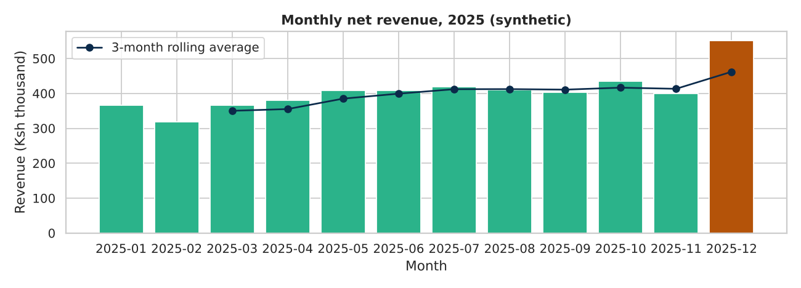
The amber bar is the peak month. The rolling line smooths the jumps and shows the upward trend built into the data.
The Pareto principle says a small share of items usually gives most of the value. Sort products by revenue, add a cumulative share, and label them A (first 80 percent), B (next 15) and C (last 5). Ranking stores by revenue mostly shows which are biggest, so also compute revenue per square metre.
#Step 10: Product Pareto, category margin and store ranking
prod=(sales.groupby(["product_name","category"]).agg(revenue_ksh=("revenue_ksh","sum"),margin_ksh=("margin_ksh","sum")).sort_values("revenue_ksh",ascending=False).reset_index())prod["share_pct"]=prod["revenue_ksh"]/prod["revenue_ksh"].sum()*100prod["cum_share_pct"]=prod["share_pct"].cumsum()prod["abc"]=np.select([prod["cum_share_pct"]<=80,prod["cum_share_pct"]<=95],["A","B"],"C")n80=int((prod["cum_share_pct"]<=80).sum())+1print(prod[["product_name","share_pct","cum_share_pct","abc"]].head(6).round(1).to_string(index=False))print("products needed for 80% of revenue:",n80,"of",len(prod))cat=sales.groupby("category").agg(rev=("revenue_ksh","sum"),mar=("margin_ksh","sum"))cat["share_pct"]=cat["rev"]/cat["rev"].sum()*100cat["margin_pct"]=cat["mar"]/cat["rev"]*100print(cat[["share_pct","margin_pct"]].sort_values("share_pct",ascending=False).round(1).to_string())store=(sales.groupby(["store_name","format","area_sqm"]).agg(rev=("revenue_ksh","sum")).reset_index())store["rev_per_sqm"]=store["rev"]/store["area_sqm"]store=store.sort_values("rev_per_sqm")print(store[["store_name","format","rev","rev_per_sqm"]].round(0).to_string(index=False))
product_name share_pct cum_share_pct abc
Eggs Tray 30 42.7 42.7 A
Cooking Oil 1L 9.3 52.0 A
Sugar 2kg 8.2 60.2 A
Body Lotion 400ml 6.6 66.8 A
Soda 2L 6.4 73.2 A
Detergent 1kg 4.3 77.5 A
products needed for 80% of revenue: 7 of 20
share_pct margin_pct
category
Dairy and Eggs 44.1 12.6
Staples 22.7 14.8
Beverages 13.6 25.6
Personal Care 8.6 30.1
Household 7.7 24.3
Snacks and Bakery 3.2 29.0
store_name format rev rev_per_sqm
Nyali Hypermarket 574023.0 164.0
Eldoret Town Supermarket 276646.0 184.0
Westlands Hypermarket 784558.0 187.0
Thika Road Mall Hypermarket 726321.0 191.0
Nakuru Town Supermarket 385714.0 227.0
Kitengela Supermarket 331989.0 237.0
Milimani Supermarket 384198.0 240.0
Nyeri Town Mini-mart 144177.0 262.0
Machakos Town Mini-mart 137413.0 275.0
Eastleigh Supermarket 416190.0 277.0
Kilimani Supermarket 505922.0 281.0
Ruaka Mini-mart 200153.0 334.0
np.select(conditions, choices, default) is the vectorised if / elif / else.
fig,ax=plt.subplots(figsize=(10,3.6))ax.barh(store["store_name"],store["rev_per_sqm"],color=[AMBERifv==store["rev_per_sqm"].min()elseBLUEforvinstore["rev_per_sqm"]])ax.set_title("Net revenue per sqm of selling area by store, 2025 (synthetic); amber = lowest")ax.set_xlabel("Revenue per square metre (Ksh)");ax.set_ylabel("Store")save("p19a_stores.png")
saved p19a_stores.png
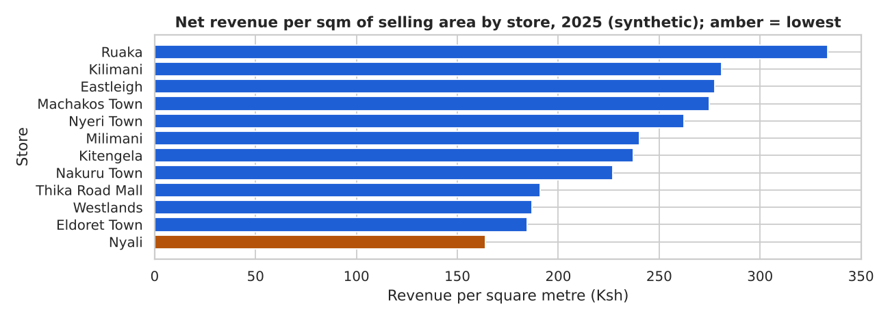
Raw revenue favours big stores. Per square metre the order changes, which is the more useful question for space decisions.
Reconciliation means comparing your figure with an independent source and explaining every difference. The ledger was built without any of our cleaning, so agreement is evidence. Expected pipeline total = ledger total minus the value of rejected rows. Any further gap is unexplained.
#Step 13: Bridge from ledger to pipeline, then find the store-month
ledger_total=pd.read_sql("SELECT ROUND(SUM(revenue_ksh), 2) AS t FROM ledger",con)["t"][0]rj=rejects.merge(products[["sku","list_price"]],on="sku",how="left",validate="many_to_one")rejected_value=round((rj["units"].abs()*rj["list_price"]*(1-rj["discount"])).sum(),2)pipeline_total=round(sales["revenue_ksh"].sum(),2)unexplained=round(ledger_total-rejected_value-pipeline_total,2)fork,vin[("Finance ledger total",ledger_total),("less rejected rows",-rejected_value),("Pipeline total",pipeline_total),("Unexplained",unexplained)]:print(f"{k:<24}{v:>16,.2f}")pipe=(sales.assign(month=sales["txn_date"].dt.strftime("%Y-%m")).groupby(["store_id","month"],as_index=False)["revenue_ksh"].sum().rename(columns={"revenue_ksh":"pipeline_ksh"}))cmp_=ledger.rename(columns={"revenue_ksh":"ledger_ksh"}).merge(pipe,on=["store_id","month"],how="outer",validate="one_to_one")cmp_["diff_ksh"]=(cmp_["ledger_ksh"]-cmp_["pipeline_ksh"]).round(2)print(cmp_.reindex(cmp_["diff_ksh"].abs().sort_values(ascending=False).index).head(3).to_string(index=False))
One unexplained amount in one store-month, and a neat round number, usually points to a manual journal entry.
#Step 14: Save outputs and let the code state the findings
sales.drop(columns=["disc_band"]).to_csv(ROOT/"data"/"processed"/"sales_clean.csv",index=False)withpd.ExcelWriter(ROOT/"reports"/"shop_summary.xlsx")asxw:monthly.reset_index().to_excel(xw,sheet_name="Monthly",index=False)prod.to_excel(xw,sheet_name="Products",index=False)rejects.drop(columns="source_file").to_excel(xw,sheet_name="Rejected",index=False)back=pd.read_excel(ROOT/"reports"/"shop_summary.xlsx",sheet_name=None)print("workbook reloaded:",{k:v.shapefork,vinback.items()})top3=prod.head(3)worst,best=store.iloc[0],store.iloc[-1]dec=monthly.loc["2025-12","revenue_ksh"]/monthly.drop("2025-12")["revenue_ksh"].mean()facts=[f"Revenue Ksh {revenue:,.0f}, margin {margin/revenue*100:.1f}%.",f"{n80} of {len(prod)} products give 80% of revenue; the top 3 ({', '.join(top3['product_name'])}) give "f"{top3['share_pct'].sum():.1f}%.",f"Lowest margin category: {cat['margin_pct'].idxmin()} at {cat['margin_pct'].min():.1f}%.",f"Revenue per sqm: best {best['store_name']} ({best['rev_per_sqm']:.0f}), worst {worst['store_name']} "f"({worst['rev_per_sqm']:.0f}).",f"December is {dec:.2f}x the average of other months; weekends are {dow['weekend']/dow['weekday']:.2f}x a weekday.",f"20% discount lines earn {disc.loc['20%','margin_pct']:.1f}% margin vs {disc.loc['0%','margin_pct']:.1f}% at none.",f"Quality: {n_dups} duplicates and {len(rejects)} rejects out of {len(raw):,} raw rows.",f"Unexplained ledger gap: Ksh {unexplained:,.2f}.",]print("\n".join("- "+xforxinfacts))
workbook reloaded: {'Monthly': (12, 5), 'Products': (20, 7), 'Rejected': (19, 9)}
- Revenue Ksh 4,867,306, margin 17.8%.
- 7 of 20 products give 80% of revenue; the top 3 (Eggs Tray 30, Cooking Oil 1L, Sugar 2kg) give 60.2%.
- Lowest margin category: Dairy and Eggs at 12.6%.
- Revenue per sqm: best Ruaka (334), worst Nyali (164).
- December is 1.40x the average of other months; weekends are 1.19x a weekday.
- 20% discount lines earn 0.8% margin vs 20.5% at none.
- Quality: 35 duplicates and 19 rejects out of 8,035 raw rows.
- Unexplained ledger gap: Ksh 85,000.00.
Excel was written with pandas and read back: a deliverable you have not re-opened is not tested.
Read carefully. These findings describe the synthetic data only. The star product, the December peak and the manual ledger adjustment were built into the generator, so finding them shows the method works, not what a real retailer looks like.
Recommendation
Evidence (see findings above)
Secure supply and a back-up supplier for the top three products
top-3 revenue share
Cap deep discounts or tie them to volume; test in two stores first
margin at 20% off, no unit uplift
Review space and range in the lowest revenue-per-sqm store
store ranking per sqm
Plan stock and staff for December and weekends
December and weekend multipliers
Ask finance to explain the posting in the flagged store-month; return rejects to stores
unexplained gap
Limits. Synthetic data; one year (no year-on-year growth); one product per line (no basket analysis); fixed unit costs. Next steps: ask for a receipt ID, add 2024 data, and move the cleaning into src/clean.py with the validation checks as unit tests.
readme=f"""# Shop Sales Analysis (synthetic data)**Question.** Agreed revenue, margin and growth; where value sits; does it reconcile with finance?**Data.** Two half-year CSVs generated with seed 2025 plus a ledger in SQLite. Synthetic.**Run.** Install requirements.txt, run the notebook top to bottom.**Results.** Revenue Ksh {revenue:,.0f}; {n80} products give 80% of revenue; one unexplained ledger posting.**Limits.** One year, one product per line, fixed costs, invented data."""(ROOT/"README.md").write_text(readme)print(readme)
# Shop Sales Analysis (synthetic data)
**Question.** Agreed revenue, margin and growth; where value sits; does it reconcile with finance?
**Data.** Two half-year CSVs generated with seed 2025 plus a ledger in SQLite. Synthetic.
**Run.** Install requirements.txt, run the notebook top to bottom.
**Results.** Revenue Ksh 4,867,306; 7 products give 80% of revenue; one unexplained ledger posting.
**Limits.** One year, one product per line, fixed costs, invented data.
One short cell is enough: the README states the question, data, how to run, the headline result and limits.
In this portfolio project, a twelve-store chain sends half-year sales files with duplicates, messy labels and bad dates, and finance reports a different total.
Task
Produce one trusted set of revenue, margin and growth figures and prove they reconcile.
Action
I wrote a quality report, cleaned with a row-count log, rejected rows I could not place instead of guessing, merged with validate="many_to_one", defined KPIs once, and bridged to the ledger by store and month.
Result
Every raw row is accounted for; the bridge isolated one unexplained posting. The data is synthetic, so the result shows the method.
Practice question.Q. Your manager says the gap to the ledger is just the rejected rows. Is that enough?
Show solution
A. Only if the rejected rows' value equals the gap. Here the unexplained line above is not zero, so the reconciliation is incomplete until that amount has a named cause.
Data and honest scope. Data: real, public. World Bank GDP, population and consumer-price inflation (via datahub.io; GDP is CC BY 4.0, the other two ODC-PDDL) and the Our World in Data CO2 dataset (CC BY 4.0, from the Global Carbon Project). They are national, annual and mostly in current US dollars. They say nothing about any borrower, so recommendations are questions to test, not credit decisions.
The question. A SACCO board asks for a one-page background note: how fast has income per person grown in Kenya, how stable have prices been, and how does Kenya compare with six regional peers? What should that change in how a lender prices a fixed-rate loan?
gdp rows= 13979 years=1960-2023
inflation rows= 13778 years=1961-2023
population rows= 17394 years=1960-2025
co2 rows= 14170 years=1960-2024
Changes made by MeritaAnalytics: the CO2 file keeps country rows from 1960 and 14 columns. No values were altered.
The World Bank files mix countries and aggregates such as 'World' and 'High income'. Ranking or summing them together double counts. The CO2 file holds only countries with ISO codes, so its code list is a safer filter than country names, which are spelled differently across sources.
#Step 2: Keep countries only and log what was dropped
source rows_in rows_kept dropped
gdp 13979 10920 3059
inflation 13778 10729 3049
population 17394 13566 3828
duplicate country-years: 0
Country Ethiopia Kenya Nigeria Rwanda South Africa Tanzania Uganda
min 1962 1961 1961 1961 1961 1961 1983
max 2023 2023 2023 2023 2023 2023 2023
The filter also drops a few small territories without a CO2 code, not only aggregates; the log shows the cost. Uganda's inflation starts later than the others, so peer comparisons need a shared window.
Merge on country code and year, never on name. Start from GDP, left-join the rest, and prove the join neither lost nor duplicated rows. Missing inflation or CO2 after a left join is information, not an error: report it, do not fill with zeros.
g=gdp_c.rename(columns={"Country Code":"iso","Country Name":"country","Value":"gdp_usd"})[["iso","country","Year","gdp_usd"]]p=pop_c.rename(columns={"Country Code":"iso","Value":"population"})[["iso","Year","population"]]i=infl_c.rename(columns={"Country Code":"iso","Inflation":"inflation"})[["iso","Year","inflation"]]c=co2.rename(columns={"iso_code":"iso","year":"Year"})[["iso","Year","population","co2","co2_per_capita"]]c=c.rename(columns={"population":"pop_owid"})m=(g.merge(p,on=["iso","Year"],how="left",validate="one_to_one").merge(i,on=["iso","Year"],how="left",validate="one_to_one").merge(c,on=["iso","Year"],how="left",validate="one_to_one"))print("rows: gdp",len(g),"| merged",len(m),"| same:",len(g)==len(m))keys=m[["iso","Year"]].merge(p,on=["iso","Year"],how="inner")print("population sum merged vs source equal:",np.isclose(m["population"].sum(),keys["population"].sum()))peer_both=m[m["iso"].isin(PEERS)].dropna(subset=["population","pop_owid"])ratio=peer_both["population"]/peer_both["pop_owid"]print(f"World Bank / OWID population for the 7 peers: min {ratio.min():.3f}, max {ratio.max():.3f}")print("rows lacking inflation:",int(m["inflation"].isna().sum()),"| lacking CO2:",int(m["co2"].isna().sum()))
rows: gdp 10920 | merged 10920 | same: True
population sum merged vs source equal: True
World Bank / OWID population for the 7 peers: min 1.000, max 1.000
rows lacking inflation: 424 | lacking CO2: 225
Reconcile to an independent total: the merged population must equal the source, and a second source should agree roughly.
GDP per capita is GDP divided by population. These GDP values are in current US dollars, so a change mixes real growth, US inflation and exchange-rate moves (a weaker shilling lowers dollar GDP even if output grows). For a rough real-terms view we deflate by US consumer inflation from the same file. This is a simplification, not an official series.
#Step 4: GDP per person, real growth and inflation volatility for Kenya
m["gdp_pc"]=m["gdp_usd"]/m["population"]us=infl_c[infl_c["Country Code"]=="USA"].sort_values("Year")idx=(1+us["Inflation"]/100).cumprod()deflator=pd.Series((idx/idx.iloc[-1]).to_numpy(),index=us["Year"].to_numpy())# last year = 1.0m["gdp_pc_real"]=m["gdp_pc"]/m["Year"].map(deflator)m=m.sort_values(["iso","Year"]).reset_index(drop=True)m["real_growth"]=m.groupby("iso")["gdp_pc_real"].pct_change()*100k=m[m["iso"]=="KEN"].set_index("Year").copy()k["infl_vol"]=k["inflation"].rolling(5).std()k["block"]=(k.index//5)*5five=k.groupby("block").agg(years=("inflation","count"),mean_infl=("inflation","mean"),mean_real_growth=("real_growth","mean")).round(1)five.index=[f"{b}-{b+4}"forbinfive.index]print(five.tail(8).to_string())print(k.loc[[1980,2000,2023],["gdp_pc","gdp_pc_real","inflation","infl_vol"]].round(1).to_string())
Blocks of five years smooth single-year noise; the years column shows the first and last blocks are shorter. A rolling standard deviation needs five values, so it starts four years in. Volatility is a different risk from the average: a steady 8 percent is easier to price than alternating 2 and 14.
For a fair peer comparison use a common window that all seven countries share: 2000 to 2023. Before using inflation in a mean or standard deviation, check for implausible values.
#Step 5: Check outliers, then build the peer table
chk=m[m["iso"].isin(PEERS)&(m["inflation"]>40)&(m["Year"]>=2000)][["country","Year","inflation"]]print("peer values above 40 percent since 2000:")print(chk.round(1).to_string(index=False)iflen(chk)else"none")w=m[m["iso"].isin(PEERS)&m["Year"].between(2000,2023)].copy()w["co2_kg_per_usd"]=w["co2"]*1e9/w["gdp_usd"]w.loc[chk.index,"inflation"]=np.nan# flagged: excluded from the PEER comparison onlyprint("flagged values set to missing in the peer window:",len(chk))defcagr(s):return((s.iloc[-1]/s.iloc[0])**(1/(len(s)-1))-1)*100peer=w.groupby("country").agg(mean_infl=("inflation","mean"),sd_infl=("inflation","std"),real_cagr=("gdp_pc_real",cagr)).round(1)last=w[w["Year"]==2023].set_index("country")peer["gdp_pc_2023"]=last["gdp_pc"].round(0)peer["co2_pc_2023"]=last["co2_per_capita"].round(2)print(peer.sort_values("mean_infl").to_string())
peer values above 40 percent since 2000:
country Year inflation
Uganda 2009 85.4
flagged values set to missing in the peer window: 1
mean_infl sd_infl real_cagr gdp_pc_2023 co2_pc_2023
country
Uganda 5.1 3.8 3.8 1013.0 0.13
Rwanda 6.2 5.9 3.9 1010.0 0.14
South Africa 6.4 1.9 0.4 5976.0 6.91
Tanzania 7.0 3.4 2.6 1188.0 0.30
Kenya 8.0 6.2 4.6 1941.0 0.38
Nigeria 11.6 6.4 2.4 1592.0 0.57
Ethiopia 14.1 11.2 8.2 1272.0 0.14
real_cagr is the compound annual growth of deflated GDP per person, 2000 to 2023. CO2 is in million tonnes, so multiplying by 1e9 gives kg. The one flagged value (Uganda, 2009) is set to missing in the peer window only, the source table is unchanged, and this is stated here rather than hidden.
#Step 6: Chart: Kenya over time, and Kenya against peers
fig,ax=plt.subplots(1,2,figsize=(10,3.6))ax[0].plot(k.index,k["gdp_pc"],color=GREY,linewidth=1.8,label="Current US$")ax[0].plot(k.index,k["gdp_pc_real"],color=BLUE,linewidth=2.2,label="Deflated by US prices")ax[0].set_title("Kenya GDP per person, 1960-2023")ax[0].set_xlabel("Year");ax[0].set_ylabel("US dollars per person");ax[0].legend(frameon=False,fontsize=8)pp=peer.sort_values("real_cagr")ax[1].barh(pp.index,pp["real_cagr"],color=[BLUEifc=="Kenya"elseGREENforcinpp.index])ax[1].set_title("Real GDP per person growth, 2000-2023")ax[1].set_xlabel("Compound growth (% per year)");ax[1].set_ylabel("Country")plt.tight_layout();plt.savefig("p19b_growth.png",dpi=130);plt.close()print("saved p19b_growth.png")
saved p19b_growth.png
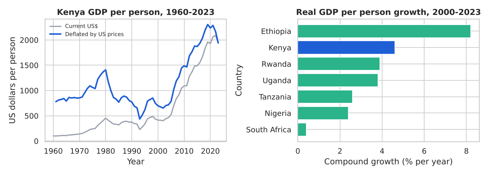
Left: dollar GDP per person, nominal and deflated. Right: Kenya (blue) against six peers. Read the sign and rough size, not the third digit, because exchange-rate episodes move these series.
fig,ax=plt.subplots(1,2,figsize=(10,3.6))kk=k.loc[1980:]ax[0].bar(kk.index,kk["inflation"],color=[AMBERifv>=15elseBLUEforvinkk["inflation"]])ax[0].set_title("Kenya annual inflation (amber = 15% or more)")ax[0].set_xlabel("Year");ax[0].set_ylabel("Percent per year")ax[1].scatter(peer["mean_infl"],peer["sd_infl"],s=60,color=[BLUEifc=="Kenya"elseGREYforcinpeer.index])forcn,rinpeer.iterrows():ax[1].annotate(cn,(r["mean_infl"],r["sd_infl"]),xytext=(4,4),textcoords="offset points",fontsize=8)ax[1].set_title("Inflation level vs volatility, 2000-2023")ax[1].set_xlabel("Mean annual inflation (%)");ax[1].set_ylabel("Standard deviation (points)")plt.tight_layout();plt.savefig("p19b_inflation.png",dpi=130);plt.close()print("saved p19b_inflation.png")
saved p19b_inflation.png
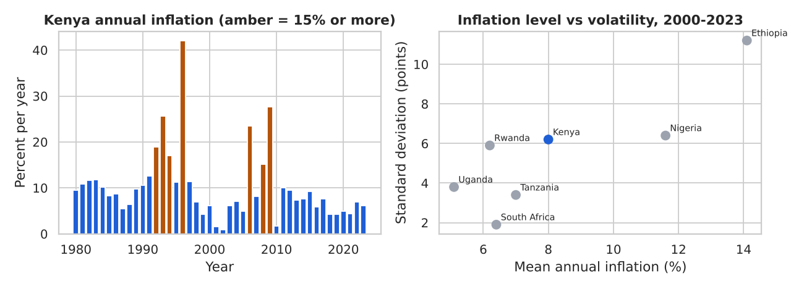
Amber bars mark high-inflation years. In the right panel, countries high and to the right have both a higher average and a less predictable price path.
#Step 8: Print the findings and a loan-pricing illustration
kw=k.loc[2000:2023]rk=peer.rank(ascending=False)ci=w.pivot(index="Year",columns="country",values="co2_kg_per_usd")chg=(ci.loc[2023]/ci.loc[2000]-1)*100facts=[f"GDP per person (current US$) rose from {k.loc[2000,'gdp_pc']:,.0f} in 2000 to {k.loc[2023,'gdp_pc']:,.0f} in 2023.",f"Deflated by US prices, real growth was {peer.loc['Kenya','real_cagr']:.1f}% a year (rank {int(rk.loc['Kenya','real_cagr'])} of 7).",f"Mean inflation {kw['inflation'].mean():.1f}% (rank {int(rk.loc['Kenya','mean_infl'])} of 7, 1 = highest); "f"volatility {peer.loc['Kenya','sd_infl']:.1f} points (rank {int(rk.loc['Kenya','sd_infl'])}).",f"Highest year: {kw['inflation'].max():.1f}% in {kw['inflation'].idxmax()}; years at 10% or more: "f"{int((kw['inflation']>=10).sum())} of {len(kw)}.",f"CO2 per US$ of GDP changed by {chg['Kenya']:.0f}% from 2000 to 2023; CO2 per person in 2023: "f"{peer.loc['Kenya','co2_pc_2023']:.2f} t.",]print("\n".join("- "+fforfinfacts))rate,target=16.0,6.0# illustrative fixed rate and target real margin, NOT market ratesry=rate-kw["inflation"]print(f"A fixed {rate:.0f}% loan: real yield ranged {ry.min():.1f} to {ry.max():.1f} points; "f"years below zero: {int((ry<0).sum())}")forqin(0.5,0.9):pi=kw["inflation"].quantile(q)print(f"to earn {target:.0f} points over inflation at the {int(q*100)}th percentile ({pi:.1f}%): "f"nominal rate about {pi+target:.1f}%")
- GDP per person (current US$) rose from 415 in 2000 to 1,941 in 2023.
- Deflated by US prices, real growth was 4.6% a year (rank 2 of 7).
- Mean inflation 8.0% (rank 3 of 7, 1 = highest); volatility 6.2 points (rank 3).
- Highest year: 27.7% in 2009; years at 10% or more: 4 of 24.
- CO2 per US$ of GDP changed by -76% from 2000 to 2023; CO2 per person in 2023: 0.38 t.
A fixed 16% loan: real yield ranged -11.7 to 15.1 points; years below zero: 2
to earn 6 points over inflation at the 50th percentile (6.6%): nominal rate about 12.6%
to earn 6 points over inflation at the 90th percentile (13.6%): nominal rate about 19.6%
Recommendation (a question to test, not a decision)
Evidence
Price for volatility, not only the average; consider repricing clauses or shorter tenors on fixed-rate products
real-yield range and required nominal rates
Stress affordability in the spike years using the lender's own income data
highest inflation year
Compare Kenya with peers on the same window before judging a margin as high or low
peer table ranks
Treat CO2 intensity as ESG background, not as credit risk
no link to repayment in this data
Limits. National annual averages cannot show county or household effects, food versus non-food prices or wage growth. GDP is in current dollars, so exchange-rate moves distort levels; our US-price deflation is a rough device. With 24 annual points, volatility estimates are noisy. The sources end in different years. Nothing here is a forecast, and no loan or borrower is in the data.
readme="""# Kenya in Public DataQuestion: how have income per person and price stability evolved, and how does Kenya compare with six peers?Data: World Bank GDP, population, inflation (datahub.io); Our World in Data CO2. Licences: CC BY 4.0, ODC-PDDL.Method: keep countries (ISO list), merge on code and year, reconcile, KPIs, common 2000-2023 window.Findings: paste the printed lines from the notebook. Limits: annual, current US$, no borrower data."""Path("p19b_README.md").write_text(readme)print(len(readme.splitlines()),"lines written; ASCII only:",readme.isascii())
5 lines written; ASCII only: True
Cite sources and licences in the README, and say what you changed. CC BY 4.0 requires attribution.
In this portfolio project a lender wants an evidence-based view of Kenya's growth and price stability against peers.
Task
Build a reproducible analysis from open data, with every figure traceable and its limits stated.
Action
I loaded four public files, kept countries only, merged on code and year, reconciled totals, built growth, five-year averages and rolling volatility, and compared seven countries on a shared window.
Result
Findings printed by code, recommendations on volatility-aware pricing, and an honest limits note.
Practice question. Repeat the peer table for 2010 to 2023 only. Does Kenya's rank on inflation volatility change?
alt=w[w["Year"].between(2010,2023)].groupby("country")["inflation"].std().round(1).sort_values(ascending=False)print(alt.to_string())print("Kenya's rank by volatility, 2010-2023:",int(alt.rank(ascending=False)["Kenya"]),"of",len(alt))
country
Ethiopia 10.8
Rwanda 4.2
Nigeria 3.5
Tanzania 3.4
Kenya 2.4
Uganda 1.8
South Africa 0.8
Kenya's rank by volatility, 2010-2023: 5 of 7
Solution: compare this rank with the 2000-2023 rank printed in the findings. The window you choose can change the story.
#19.7 Project 3: Insurance Data Quality (Intermediate)
Data and honest scope. Data: synthetic, generated below with a fixed seed. The insurer, products, premiums and counties are invented, and the defects are injected on purpose so that you can check that every one is caught. No finding describes a real insurer.
The question. A Kenyan general insurer's monthly claim totals never match its policy system. Which records can we trust, what is wrong with the rest, and what do the trusted records say about claim frequency by product?
#Step 1: A clean policy book and claims history (the hidden truth)
Claims come from a Poisson count per policy, so frequency differs by product by design. Cleaning must not destroy that signal.
Now damage the files that are written to disk. Each defect uses a different set of rows, so every injected problem has an exact count that the validation report must reproduce. Dates become text, as in a real CSV.
#Step 2: Inject defects and write the two raw extracts
pf=pol.copy()pf["start_date"]=pf["start_date"].dt.strftime("%Y-%m-%d")pf["end_date"]=pf["end_date"].dt.strftime("%Y-%m-%d")pk=rng.permutation(N)pf.loc[pk[:5],"policy_id"]=[f"pl{100000+i}"foriinrange(5)]# lower-case prefixpf.loc[pk[5:9],"policy_id"]=np.nan# missing keypf.loc[pk[9:29],"customer_id"]=np.nan# missing customerpf.loc[pk[29:34],"start_date"]="2024-13-05"# impossible monthpf.loc[pk[34:40],"end_date"]="2023-06-01"# end before startpf.loc[pk[40:48],"premium_ksh"]=[0,-5000,0,-1,0,-250,0,-90]# premium <= 0pf.loc[pk[48:53],"premium_ksh"]=pf["premium_ksh"].max()*8# extreme premiumexact=pf.iloc[pk[100:115]]# 15 exact duplicatesconflict=pf.iloc[pk[115:119]].copy()conflict["premium_ksh"]+=777# same ID, other premiumpf=pd.concat([pf,exact,conflict],ignore_index=True)pf.to_csv(IN/"data/raw/policies.csv",index=False)cf=clm.copy()cf["claim_date"]=cf["claim_date"].dt.strftime("%Y-%m-%d")ck=rng.permutation(len(cf))cf.loc[ck[:10],"policy_id"]=[f"PL9{x:05d}"forxinrange(10)]# orphan claimsdefshift(ix,days):return(pd.to_datetime(cf.loc[ix,"claim_date"])+pd.Timedelta(days=days)).dt.strftime("%Y-%m-%d")cf.loc[ck[10:16],"claim_date"]=shift(ck[10:16],-450)# before policy startcf.loc[ck[16:24],"claim_date"]=shift(ck[16:24],450)# after policy endcf.loc[ck[24:27],"claim_date"]="2025-02-30"# impossible datecf.loc[ck[27:31],"claim_amount_ksh"]=-cf.loc[ck[27:31],"claim_amount_ksh"].abs()cf.loc[ck[31:36],"claim_amount_ksh"]=9_500_000# above any sum insuredrekey=cf.iloc[ck[60:70]].copy()rekey["claim_id"]=[f"CL{2000000+i}"foriinrange(len(rekey))]# same claim, new IDcf=pd.concat([cf,rekey,cf.iloc[ck[80:88]]],ignore_index=True)# + 8 exact duplicatescf.to_csv(IN/"data/raw/claims.csv",index=False)print("policy rows:",len(pf),"| claim rows:",len(cf))
policy rows: 1219 | claim rows: 283
A re-keyed duplicate has a new claim_id but the same policy, date and amount: the dangerous kind, because an exact-duplicate check cannot see it.
Beginners write long scripts of if statements. A cleaner way is rules as data: each rule is a small named object (id, table, description, severity, test function). One run_rules function applies any list of rules and returns a True/False flag matrix. Adding a rule is one line, and the report and quarantine update themselves.
@dataclass(frozen=True)classRule:rid:strtable:strname:strseverity:str# "Error" or "Warning"test:Callable# df -> boolean Series, True = the row FAILSdefrun_rules(df,rules):returnpd.DataFrame({r.rid:r.test(df).fillna(False).astype(bool)forrinrules},index=df.index)defrule_report(flags,rules):rows=[{"rule":r.rid,"check":r.name,"severity":r.severity,"failed":int(flags[r.rid].sum())}forrinrules]returnpd.DataFrame(rows)deffailed_names(flags):returnflags.apply(lambdar:", ".join(r.index[r]),axis=1)defhas_error(flags,rules):returnflags[[r.ridforrinrulesifr.severity=="Error"]].any(axis=1)print(Rule("X1","demo","demo","Error",lambdad:d["x"]<0).test(pd.DataFrame({"x":[-1,5]})).tolist())
[True, False]
frozen=True stops a rule being changed by accident. In a real project this cell lives in src/validate.py.
Exact duplicates are dropped and logged first. Conflicting duplicates (same ID, different premium) are different: nobody can tell which copy is right, so every copy is quarantined for the data owner.
Each lambda returns True where the row FAILS. One row can fail several rules, so the failed column can add up to more than the quarantine size. Comparisons with NaN give False; fillna(False) makes that explicit.
Claim rules need policy facts (cover dates, sum insured), so claims are joined to the clean policies first. A claim belongs to one policy, so the join is many-to-one, and validate guarantees it. An orphan claim has no policy in the extract; a claim whose policy was quarantined is a different problem, so they are separate rules.
#Step 5: Join claims to clean policies and run the claim rules
claims=pd.read_csv(IN/"data/raw/claims.csv")cl_x=claims.drop_duplicates().copy()cl_x["claim_dt"]=pd.to_datetime(cl_x["claim_date"],format="%Y-%m-%d",errors="coerce")cl_x["in_extract"]=cl_x["policy_id"].isin(pol_x["policy_id"].dropna())lookup=pol_clean[["policy_id","product","county","start_dt","end_dt","sum_insured_ksh"]]n0=len(cl_x)cl_x=cl_x.merge(lookup,on="policy_id",how="left",validate="many_to_one")print("rows before/after join:",n0,len(cl_x))key=["policy_id","claim_dt","claim_amount_ksh"]clm_rules=[Rule("K01","claims","policy_id present","Error",lambdad:d["policy_id"].isna()),Rule("K02","claims","claim date valid","Error",lambdad:d["claim_dt"].isna()),Rule("K03","claims","amount above zero","Error",lambdad:d["claim_amount_ksh"]<=0),Rule("K04","claims","policy exists (no orphan)","Error",lambdad:d["policy_id"].notna()&~d["in_extract"]),Rule("K05","claims","policy passed validation","Error",lambdad:d["in_extract"]&d["product"].isna()),Rule("K06","claims","not a re-keyed duplicate","Error",lambdad:d["policy_id"].notna()&d.duplicated(subset=key,keep="first")),Rule("K07","claims","date inside cover","Warning",lambdad:d["product"].notna()&d["claim_dt"].notna()&~d["claim_dt"].between(d["start_dt"],d["end_dt"])),Rule("K08","claims","amount within sum insured","Warning",lambdad:d["product"].notna()&(d["claim_amount_ksh"]>d["sum_insured_ksh"])),]cflags=run_rules(cl_x,clm_rules)clm_rep=rule_report(cflags,clm_rules)cerr=has_error(cflags,clm_rules)clm_q=cl_x[cerr].assign(failed_rules=failed_names(cflags[cerr]))clm_clean=cl_x[~cerr].copy()n_cdup=len(claims)-len(cl_x)print(clm_rep.to_string(index=False))print("source",len(claims),"= dups",n_cdup,"+ quarantined",len(clm_q),"+ clean",len(clm_clean),"->",len(claims)==n_cdup+len(clm_q)+len(clm_clean))injected=pd.Series({"K01":0,"K02":3,"K03":4,"K04":10,"K06":10,"K07":14,"K08":5})cmp_=pd.DataFrame({"injected":injected,"found":clm_rep.set_index("rule")["failed"].reindex(injected.index)})print(cmp_.T.to_string())
how="left" keeps every claim even without a policy, so orphans stay visible instead of vanishing as in an inner join. duplicated(keep="first") keeps the first claim and rejects only the re-keyed copies.
Read the injected-versus-found table. Rule K04 can find more orphans than were injected, and K05 can fire at all, because damage to the policy file leaks into the claims file: a claim whose policy ID was blanked or mistyped has nothing to join to. This is why you validate both tables and read the reports together.
Claims to policies is many-to-one and safe. Policies to claims is one-to-many: a policy with three claims becomes three rows, so anything stored once per policy (premium) is counted three times. The cure is to aggregate claims to one row per policy first.
#Step 6: Show the inflation trap, then do it safely
clm_ok=cl_x[~cerr&~cflags["K07"]&~cflags["K08"]].copy()# accepted: no errors, no warningsnaive=pol_clean.merge(clm_ok[["policy_id","claim_id"]],on="policy_id",how="left")prem_up=naive["premium_ksh"].sum()/pol_clean["premium_ksh"].sum()*100-100print("policies",len(pol_clean),"-> naive merge rows",len(naive),f"| premium overstated by {prem_up:.2f}%")pol_clean.merge(clm_ok,on="policy_id",how="left",validate="one_to_one")
Claim frequency is claims divided by exposure (cover provided, in policy-years). Severity is the average amount per claim. Loss ratio is claims divided by premium. Small segments give unstable rates, so add a rough 95 percent interval: n / E +/- 1.96 x sqrt(n) / E (a normal approximation to the Poisson count). If two intervals overlap heavily, do not claim one segment is riskier.
The function takes the segment column as an argument, so the same code serves product, county or any combination.
#Step 9: Chart: frequency by product with uncertainty
t=by_prod.sort_values("freq_per_100py",ascending=False)fig,ax=plt.subplots(figsize=(10,3.6))ax.bar(t.index,t["freq_per_100py"],color=[AMBERifv==t["freq_per_100py"].max()elseBLUEforvint["freq_per_100py"]],yerr=[t["freq_per_100py"]-t["ci_low"],t["ci_high"]-t["freq_per_100py"]],capsize=5,ecolor=DARK)ax.set_title("Claim frequency by product with approximate 95% interval (synthetic data)")ax.set_xlabel("Product");ax.set_ylabel("Claims per 100 policy-years")plt.tight_layout();plt.savefig("p19c_frequency.png",dpi=130);plt.close();print("saved p19c_frequency.png")
saved p19c_frequency.png
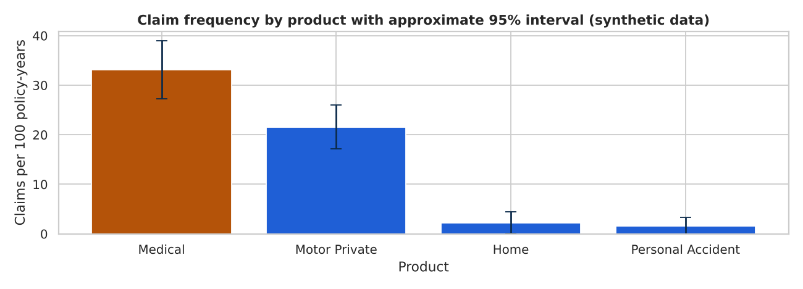
Amber marks the most frequent product. Whiskers show how far each rate could move by chance alone: pairs whose whiskers do not overlap really differ; overlapping pairs need more data.
Real data never reveals the truth, but our generator does. Compare the frequency recovered from validated data with the true frequency. The gap is the price of quarantining records instead of repairing them.
true_freq recovered_freq recovered_pct_of_true
product
Home 3.3 2.2 68.6
Medical 37.7 33.1 87.9
Motor Private 24.7 21.6 87.4
Personal Accident 3.1 1.6 50.8
true claims 265 | accepted 222 | kept 83.8%
The true frequency here is claims per policy, not per policy-year, so the ratio is only a rough guide. In real projects you can only measure how much you quarantined, and treat every rate as a lower bound.
#Deliver the exception workbook, then state the findings
Data owners do not read notebooks. They need a scorecard, a reconciliation and the exact records to fix, with rule names.
#Step 11: Write the workbook, reload it, print the findings
dq=pd.concat([rule_report(pflags,pol_rules),clm_rep],ignore_index=True)pol_exc=pol_x[pflags.any(axis=1)].assign(failed_rules=failed_names(pflags)).drop(columns=["start_dt","end_dt","cap"])clm_exc=(cl_x[cflags.any(axis=1)].assign(failed_rules=failed_names(cflags)).drop(columns=["claim_dt","in_extract","start_dt","end_dt"]))xl=IN/"reports"/"data_quality_exceptions.xlsx"withpd.ExcelWriter(xl)asxw:dq.to_excel(xw,sheet_name="Scorecard",index=False)pol_exc.to_excel(xw,sheet_name="Policy exceptions",index=False)clm_exc.to_excel(xw,sheet_name="Claim exceptions",index=False)back=pd.read_excel(xl,sheet_name=None)print({k:v.shapefork,vinback.items()})print("exceptions match flags:",len(back["Claim exceptions"])==int(cflags.any(axis=1).sum()))hi,lo=by_prod["freq_per_100py"].idxmax(),by_prod["freq_per_100py"].idxmin()lr=by_prod["loss_ratio_pct"].idxmax()facts=[f"Policies: {len(policies)} rows -> {len(pol_clean)} clean ({n_pdup} exact duplicates, {len(pol_q)} quarantined).",f"Claims: {len(claims)} rows -> {len(clm_clean)} clean ({n_cdup} exact duplicates, {len(clm_q)} quarantined); "f"{len(clm_ok)} accepted after warnings.",f"Re-keyed duplicates caught: {int(clm_rep.set_index('rule').loc['K06','failed'])}; orphans: {int(clm_rep.set_index('rule').loc['K04','failed'])}.",f"Naive join overstated premium by {prem_up:.2f}%.",f"Highest frequency: {hi} ({by_prod.loc[hi,'freq_per_100py']:.1f} per 100 policy-years); lowest: {lo} "f"({by_prod.loc[lo,'freq_per_100py']:.1f}).",f"Highest loss ratio: {lr} ({by_prod.loc[lr,'loss_ratio_pct']:.1f}%) on {int(by_prod.loc[lr,'claims'])} claims.",f"Highest-frequency county: {by_cty.index[0]} ({by_cty['freq_per_100py'].iloc[0]:.1f}); intervals overlap with the lowest: "f"{by_cty['ci_low'].iloc[0]<=by_cty['ci_high'].iloc[-1]}.",f"Only {len(clm_ok)/len(clm)*100:.1f}% of true claims survive validation, so rates are lower bounds.",]print("\n".join("- "+fforfinfacts))
{'Scorecard': (16, 4), 'Policy exceptions': (61, 9), 'Claim exceptions': (53, 8)}
exceptions match flags: True
- Policies: 1219 rows -> 1168 clean (15 exact duplicates, 36 quarantined).
- Claims: 283 rows -> 241 clean (8 exact duplicates, 34 quarantined); 222 accepted after warnings.
- Re-keyed duplicates caught: 10; orphans: 15.
- Naive join overstated premium by 3.15%.
- Highest frequency: Medical (33.1 per 100 policy-years); lowest: Personal Accident (1.6).
- Highest loss ratio: Motor Private (43.5%) on 92 claims.
- Highest-frequency county: Uasin Gishu (23.1); intervals overlap with the lowest: True.
- Only 83.8% of true claims survive validation, so rates are lower bounds.
Read carefully. These findings describe the synthetic data only. Defects were injected and product risk levels were chosen by the generator, so the project shows the method, not how a real insurer performs.
Recommendation
Evidence
Make policy_id and customer_id mandatory at export and validate the ID format there
missing and malformed IDs
Add a re-keyed duplicate check on (policy, date, amount) at claims intake
re-keyed duplicates caught
Send claims outside cover or above sum insured to handlers: fraud, wrong policy link or typing error
K07 and K08 counts
Report frequency per policy-year with an interval, not a bare ranking; hold county pricing
overlapping county intervals
Run the same rule list monthly and track failures as a data-quality KPI
scorecard
Limits. Synthetic data; rows are rejected rather than repaired, which biases frequencies down; the interval is a rough approximation; only 16 rules. Next steps: add a documented repair step before quarantine, test the extreme-premium threshold at 1.5 and 5 interquartile ranges, save the scorecard each month, and move the rule engine to src/validate.py with one unit test per rule. Libraries such as pandera package the same idea but are not installed here.
In this portfolio project an insurer's claim totals did not match its policy system and nobody knew which records were wrong.
Task
Validate both extracts, separate bad records, join the rest safely and report frequency by product.
Action
I wrote each rule as an object with a severity, ran them with one function, quarantined errors, flagged warnings, joined with validate, aggregated claims before the reverse join, and reloaded the exception workbook to check it.
Result
Every row reconciled, re-keyed duplicates were caught, and the naive join was shown to overstate premium. The data is synthetic, so the result shows the method.
Practice question. A colleague divides accepted claims by clean policies and says that is the claim rate for every product. What is wrong?
Show solution
It blends products with very different risk, ignores exposure, and gives no interval. Report a rate per segment, per policy-year, with an interval, and say that quarantined claims make it a lower bound.
#19.8 Project 4: M-Pesa Personal Finance Analytics (Intermediate)
Data and honest scope. Data: synthetic. Every name, merchant, paybill, phone fragment and amount is generated in code with a fixed seed. It mimics the shape of a mobile-money statement export (receipt, time, details, paid in, withdrawn, balance), not anyone's real account. Several thousand rows over two years is more than an ordinary person has; read it as a very active trader who mixes household and shop money.
The question. Where does the money go, is the user saving, which payments look unusual, who is paid most, and what should next quarter's spending look like?
importreimportnumpyasnp,pandasaspdimportmatplotlib.pyplotasplt,seabornassnssns.set_theme(style="whitegrid")BLUE,GREEN,GREY,DARK,AMBER="#1F5FD6","#2BB38A","#9CA3AF","#0B2A4A","#B45309"pd.set_option("display.width",100)rng=np.random.default_rng(2025)FIRST=["Wanjiru","Otieno","Achieng","Kamau","Njeri","Mutua","Akinyi","Kiptoo","Wambui","Odhiambo","Chebet","Mwangi","Naliaka","Barasa","Atieno","Karanja"]people=list(rng.choice([f"{f}{i}."forfinFIRSTforiin"ABCDEFGH"],60,replace=False))CATS={# category: (weight, median Ksh, detail templates)"Groceries":(14,350,["Buy Goods - Fresh Mart Supermarket","Buy Goods - Soko Bora Grocers","Buy Goods - Corner Butchery"]),"Transport":(13,150,["Pay Bill to Safiri Matatu Sacco","Pay Bill to Quick Boda Rides","Pay Bill to Petro Fuel Station"]),"Airtime and data":(11,100,["Airtime Purchase","Data Bundles Purchase"]),"Utilities":(3,600,["Pay Bill to Power Tokens Electricity","Pay Bill to FiberHome Internet"]),"Cash withdrawal":(5,700,["Withdraw Cash at Agent"]),"Send money":(16,300,["Customer Transfer to"]),"Eating out":(9,300,["Buy Goods - Mama Rosa Hotel","Buy Goods - Chapo Corner Kiosk"]),"Entertainment":(3,250,["Pay Bill to StreamBox Subscription","Pay Bill to LuckyPlay Betting"]),"Health":(2,700,["Pay Bill to Afya Pharmacy"]),"Savings":(2,1200,["Transfer to Savings - Umoja Sacco Deposit"]),"Fees":(4,15,["Transaction Charge"]),"Income - received":(6,1200,["Funds received from"]),"Income - sales":(14,600,["Customer Payment from"]),"Income - deposit":(2,3000,["Deposit of Funds at Agent"]),}print(len(CATS),"categories,",len(people),"people")
14 categories, 60 people
#Step 2: Generate the rows: categories, times, amounts, rent, salary and planted anomalies
Read the file as text first: money with thousands separators arrives as strings. Parse with an explicit format= and errors="coerce" so a date like 31/02/2025 becomes NaT instead of raising an error or being guessed. Rejected rows go to their own table with a reason.
#Step 4: Parse dates and money, set rejects aside, reconcile the balance
stmt=pd.read_csv("p19d_mpesa_raw.csv")truth=stmt[["Receipt No","gen_category","gen_anomaly"]].drop_duplicates("Receipt No")s=stmt.drop(columns=["gen_category","gen_anomaly"]).drop_duplicates()n_dups=len(stmt)-len(s)s["Details"]=s["Details"].str.strip().str.replace(r"\s+"," ",regex=True)s["time"]=pd.to_datetime(s["Completion Time"],format="%Y-%m-%d %H:%M:%S",errors="coerce")forcolin["Paid In","Withdrawn","Balance"]:s[col]=pd.to_numeric(s[col].astype("string").str.replace(",","",regex=False),errors="coerce")s["paid_in"],s["withdrawn"]=s["Paid In"].fillna(0.0),s["Withdrawn"].fillna(0.0)reason=np.select([s["time"].isna(),(s["paid_in"]==0)&(s["withdrawn"]==0)],["unreadable or missing time","no amount"],default="")rejects=s[reason!=""].assign(reason=reason[reason!=""])s=s[reason==""].sort_values("time",kind="stable").reset_index(drop=True)print("raw",len(stmt),"= duplicates",n_dups,"+ rejected",len(rejects),"+ clean",len(s),"->",len(stmt)==n_dups+len(rejects)+len(s))print(rejects["reason"].value_counts().to_dict())step=s["Balance"].diff()-(s["paid_in"]-s["withdrawn"])print("balance steps that differ from the row's net amount:",int((step.abs()>0.01).sum()),"of",int(step.notna().sum()))
raw 5085 = duplicates 25 + rejected 15 + clean 5045 -> True
{'unreadable or missing time': 10, 'no amount': 5}
balance steps that differ from the row's net amount: 15 of 5044
Each balance should equal the previous balance plus the row's net amount. Mismatches appear where a row was removed, so their count stays close to the number of rejects.
A statement has no category column; the only clue is Details. A rule-based categoriser is a list of (category, pattern) pairs checked in order, where the first match wins. Order matters, as the next cell shows.
defcategorise(details,rules,default="Other"):text=details.str.lower()conds=[text.str.contains(pat,regex=True)for_,patinrules]returnpd.Series(np.select(conds,[nforn,_inrules],default=default),index=details.index)naive=[("Savings",r"sacco"),("Cash withdrawal",r"withdraw"),("Transport",r"matatu|boda|fuel|taxi")]test=s.merge(truth,on="Receipt No",how="left")test["naive"]=categorise(test["Details"],naive)wrong=test[(test["naive"]!="Other")&(test["naive"]!=test["gen_category"])]print("rows put in the wrong category:",len(wrong))print(wrong.groupby(["gen_category","naive"]).size().to_string())
rows put in the wrong category: 192
gen_category naive
Transport Savings 192
sacco appears in a savings deposit and in the name of a matatu company. A broad word placed first steals every matatu fare.
#Step 6: The final ordered rules, checked against the hidden label
RULES=[("Income - salary",r"business payment from"),("Income - sales",r"customer payment from"),("Income - received",r"funds received from"),("Income - deposit",r"deposit of funds"),("Rent",r"\brent\b"),("Savings",r"transfer to savings"),("Fees",r"transaction charge"),("Cash withdrawal",r"withdraw cash"),("Airtime and data",r"airtime|data bundles"),("Utilities",r"electricity|fiberhome|internet"),("Transport",r"matatu|boda|fuel station|taxi"),("Groceries",r"supermarket|grocers|butchery"),("Eating out",r"hotel|kiosk|eatery"),("Entertainment",r"streambox|betting|cinema"),("Health",r"pharmacy|clinic"),("Send money",r"customer transfer to"),]s["category"]=categorise(s["Details"],RULES)chk=s.merge(truth,on="Receipt No",how="left")print(f"rules: {len(RULES)} | rows in Other: {int((s['category']=='Other').sum())} | "f"agreement with hidden label: {100*(chk['category']==chk['gen_category']).mean():.1f}%")
rules: 16 | rows in Other: 0 | agreement with hidden label: 100.0%
Full agreement is an artefact of synthetic text that follows fixed templates. On a real statement expect a long tail of unmatched merchants: keep an Other bucket, review its largest rows monthly and add rules. Keeping rules as data lets you print, review and extend them.
Group rows into income (money in), saving (transfers to a Sacco, which leave M-Pesa but are not consumption) and spending (everything else that leaves). The savings rate is (income - spending) / income.
#Step 7: Monthly cash flow, totals and category mix
typical is the median payment. A category can be large through many small payments (airtime) or a few big ones (rent), and they need different advice. Months where spending exceeds income show as negative savings rates.
#Step 8: Chart: cash flow and where the money goes
fig,ax=plt.subplots(1,2,figsize=(10,3.6),gridspec_kw={"width_ratios":[1.3,1]})x=flow.index.to_timestamp()ax[0].plot(x,flow["income"]/1000,color=BLUE,linewidth=2.2,label="Income")ax[0].plot(x,flow["spending"]/1000,color=AMBER,linewidth=2.2,label="Spending")ax[0].set_title("Monthly income and spending");ax[0].set_xlabel("Month");ax[0].set_ylabel("Ksh thousand");ax[0].legend()top=mix["total"].head(7)/1e6ax[1].barh(top.index[::-1],top.values[::-1],color=[AMBERifn==top.index[0]elseBLUEfornintop.index[::-1]])ax[1].set_title("Top spending categories, 24 months");ax[1].set_xlabel("Total spent (Ksh million)");ax[1].set_ylabel("Category")plt.tight_layout();plt.savefig("p19d_cashflow.png",dpi=130);plt.close();print("saved p19d_cashflow.png")
saved p19d_cashflow.png
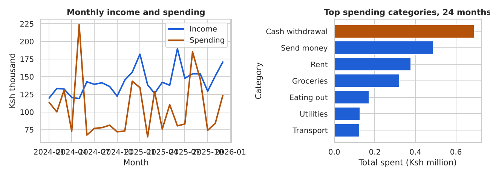
The left panel shows whether the gap between the lines is stable; the amber bar on the right is the category to look at first.
RFM scores each entity on Recency (days since the last payment), Frequency (number of payments) and Monetary value (total paid). Retailers use it on customers; here we apply it to payees. First extract a payee name from Details. Mama Rosa Hotel and MAMA ROSA HOTEL must become one entity or they would count twice.
#Step 9: Extract payees, score R, F and M from 1 to 4, name the segments
skip=["Fees","Airtime and data","Cash withdrawal"]pay=s[(s["kind"]=="spending")&~s["category"].isin(skip)].copy()p=pay["Details"].str.replace(r"^(customer transfer to - |buy goods - |pay bill to |transfer to savings - )","",case=False,regex=True)pay["payee"]=p.str.replace(r"^\d+\*{3}\d+ ","",regex=True).str.replace(r"^\d{6} - ","",regex=True).str.title()snap=s["time"].max().normalize()+pd.Timedelta(days=1)rfm=pay.groupby("payee").agg(last=("time","max"),frequency=("amount","count"),monetary=("amount","sum"))rfm["recency_days"]=(snap-rfm["last"].dt.normalize()).dt.daysrk=lambdav:v.rank(method="first")rfm["R"]=pd.qcut(rk(-rfm["recency_days"]),4,labels=[1,2,3,4]).astype(int)# 4 = most recentrfm["F"]=pd.qcut(rk(rfm["frequency"]),4,labels=[1,2,3,4]).astype(int)rfm["M"]=pd.qcut(rk(rfm["monetary"]),4,labels=[1,2,3,4]).astype(int)rfm["segment"]=np.select([(rfm.R>=3)&(rfm.F>=3)&(rfm.M>=3),(rfm.F>=3)&(rfm.R>=3),(rfm.M>=3)&(rfm.R<=2),(rfm.F>=3)&(rfm.R<=2)],["Core partners","Regular, smaller","Big but quiet","Fading regulars"],default="Occasional")prof=rfm.groupby("segment").agg(payees=("monetary","count"),median_recency=("recency_days","median"),median_freq=("frequency","median"),total_ksh=("monetary","sum"))prof["share_of_money_pct"]=(100*prof["total_ksh"]/prof["total_ksh"].sum()).round(1)print("payees scored:",len(rfm))print(prof.sort_values("total_ksh",ascending=False).round(0).to_string())print("largest payees:",", ".join(rfm.sort_values("monetary",ascending=False).index[:3]))
rank(method="first") breaks ties so qcut always makes four equal groups. The thresholds are a judgement call: change one and re-run; an unstable segmentation is not worth acting on. A monthly rent payee can look 'quiet' by recency, which is why RFM needs a business reading.
A z-score says how many standard deviations a value is from the mean: z = (x - mean) / sd. A common rule flags |z| above 3. For money, compare a payment with its own category (Ksh 15,750 is normal rent, not airtime). Payment amounts are also right-skewed, so a z-score on the log of the amount behaves better than one on the raw amount. We compare both against the planted payments.
#Step 10: Z-scores within each category, raw and log
Outliers inflate the very mean and sd used to find them (masking), so a z-score is a screening tool, not a verdict. A materiality rule (amount above Ksh 10,000) is tuned with the person who knows the account. Every flagged row is a question, not an accusation: a large transfer may be a school fee.
#Step 11: Chart: payments over time, flagged in amber
fig,ax=plt.subplots(figsize=(10,3.6))ok_=out[~review]ax.scatter(ok_["time"],ok_["amount"],s=6,color=GREY,label="Within normal range")ax.scatter(out.loc[review,"time"],out.loc[review,"amount"],s=28,color=AMBER,label="Flagged for review")ax.set_yscale("log")ax.set_title("Spending payments over time, flagged payments in amber (log scale)")ax.set_xlabel("Date");ax.set_ylabel("Payment amount (Ksh, log scale)");ax.legend(loc="lower right")plt.tight_layout();plt.savefig("p19d_anomalies.png",dpi=130);plt.close();print("saved p19d_anomalies.png")
np.polyfit(x, y, 1) fits the straight line y = slope x + intercept with the smallest squared error. With months numbered 0, 1, 2, ... the slope is the average change in spending per month. A line cannot see seasonality, so December is handled as a separate multiplier, and we test honestly: fit on the first 18 months, predict the last 6, and compare with a naive baseline (repeat the mean of the last three known months).
#Step 12: Fit the trend, back-test, and forecast three months
set_aside=out[review].groupby("month")["amount"].sum().reindex(flow.index,fill_value=0)y=(flow["spending"]-set_aside).to_numpy()# spending without the reviewed paymentsxm=np.arange(len(y));dec=(flow.index.month==12)slope,intercept=np.polyfit(xm[~dec],y[~dec],1)# trend fitted without Decembersfit=slope*xm+interceptuplift=float((y[dec]/fit[dec]).mean())sd=(y-fit)[~dec].std(ddof=2)print(f"slope Ksh {slope:,.0f} per month | December runs x{uplift:.2f} of trend | residual sd Ksh {sd:,.0f}")k=18b_slope,b_int=np.polyfit(xm[:k][~dec[:k]],y[:k][~dec[:k]],1)b_up=float((y[:k][dec[:k]]/(b_slope*xm[:k][dec[:k]]+b_int)).mean())pred=(b_slope*xm[k:]+b_int)*np.where(dec[k:],b_up,1.0)naive_pred=np.full(len(y)-k,y[k-3:k].mean())mae=lambdaa,p:np.abs(a-p).mean()print(f"back-test MAE: trend Ksh {mae(y[k:],pred):,.0f} | naive Ksh {mae(y[k:],naive_pred):,.0f} | "f"trend beats naive: {bool(mae(y[k:],pred)<mae(y[k:],naive_pred))}")future=pd.period_range(flow.index[-1]+1,periods=3,freq="M")fc=slope*np.arange(len(y),len(y)+3)+interceptfc_tbl=pd.DataFrame({"forecast":fc,"low":fc-2*sd,"high":fc+2*sd},index=future.astype(str))print((fc_tbl/1000).round(1).to_string())
Never judge a forecast on the data it was fitted to; hold out the end of the series. The band is about plus or minus two residual standard deviations: it describes past scatter, not a guarantee. The three forecast months are January to March, so no December uplift applies.
fig,ax=plt.subplots(figsize=(10,3.6))ax.plot(flow.index.to_timestamp(),y/1000,color=BLUE,marker="o",markersize=4,linewidth=1.8,label="Actual spending")ax.plot(flow.index.to_timestamp(),fit/1000,color=DARK,linestyle="--",linewidth=1.4,label="Trend (fitted without December)")xf=future.to_timestamp()ax.plot(xf,fc/1000,color=AMBER,marker="o",linewidth=2.2,label="Forecast")ax.fill_between(xf,(fc-2*sd)/1000,(fc+2*sd)/1000,color=AMBER,alpha=0.2,label="Plus or minus 2 sd")ax.set_title("Monthly spending, linear trend and three-month forecast")ax.set_xlabel("Month");ax.set_ylabel("Spending (Ksh thousand)");ax.legend(loc="upper left")plt.tight_layout();plt.savefig("p19d_forecast.png",dpi=130);plt.close();print("saved p19d_forecast.png")
saved p19d_forecast.png
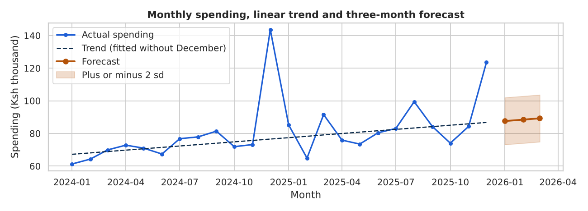
December sits well above the dashed line, which is why it gets its own multiplier. Collect another year of data before trusting that multiplier: it rests on two Decembers.
checks={"raw = clean + rejected + duplicates":len(stmt)==len(s)+len(rejects)+n_dups,"receipt numbers unique":bool(s["Receipt No"].is_unique),"every row has a category (no Other)":bool((s["category"]!="Other").all()),"monthly totals equal row totals":bool(abs(flow[["income","spending","saving"]].sum().sum()-s["amount"].sum())<1),}forname,okinchecks.items():print("PASS"ifokelse"FAIL","-",name)s[["Receipt No","time","Details","category","kind","paid_in","withdrawn","Balance"]].to_csv("p19d_mpesa_clean.csv",index=False)rejects[["Receipt No","Completion Time","Details","reason"]].to_csv("p19d_mpesa_rejects.csv",index=False)top=mix.index[0]cash_share=mix.loc["Cash withdrawal","share_pct"]neg=int((flow["kept"]<0).sum())caught=int((review&(out["gen_anomaly"]==1)).sum())findings=[f"Clean rows {len(s):,} of {len(stmt):,} raw; {len(rejects)} rejected, {n_dups} duplicates.",f"Income Ksh {tot['income']:,.0f}, spending Ksh {tot['spending']:,.0f}: savings rate {rate:.1f}% over 24 months.",f"Largest spending category: {top} ({mix.loc[top,'share_pct']}%); cash withdrawals {cash_share}%; fees {mix.loc['Fees','share_pct']}%.",f"Months where spending exceeded income: {neg} of {len(flow)}.",f"Core partners hold {prof.loc['Core partners','share_of_money_pct']}% of payee money across {int(prof.loc['Core partners','payees'])} payees.",f"Planted anomalies caught by log z plus materiality: {caught} of {planted}.",f"Spending trend (ex-December): Ksh {slope:,.0f} per month; December x{uplift:.2f} of trend.",]print("\n".join("- "+fforfinfindings))
PASS - raw = clean + rejected + duplicates
PASS - receipt numbers unique
PASS - every row has a category (no Other)
PASS - monthly totals equal row totals
- Clean rows 5,045 of 5,085 raw; 15 rejected, 25 duplicates.
- Income Ksh 3,433,099, spending Ksh 2,525,295: savings rate 26.4% over 24 months.
- Largest spending category: Cash withdrawal (27.3%); cash withdrawals 27.3%; fees 0.2%.
- Months where spending exceeded income: 3 of 24.
- Core partners hold 55.0% of payee money across 23 payees.
- Planted anomalies caught by log z plus materiality: 12 of 12.
- Spending trend (ex-December): Ksh 849 per month; December x1.65 of trend.
Recommendation
Evidence
Tag person-to-person transfers (family, business, rent) for one month: the largest category tells least
category mix
Budget for December as a multiple of a normal month and set money aside in October and November
December multiplier
Automate a Sacco transfer on salary day to smooth the savings rate
months of negative saving
Send any payment with a high log z-score and more than Ksh 10,000 to a confirm-or-dispute list
anomaly detector
Re-run the pipeline monthly and review the Other bucket so the rules do not decay
rule agreement
Limits. Synthetic and template-driven, so real text will not reach full rule agreement; one account says nothing about other people; a straight line is a strong assumption on two years of data; z-scores are a screening tool; the fee tariff is not modelled. A real statement contains other people's phone numbers and names: mask or hash them before sharing a notebook. For Power BI, load the clean CSV and the monthly flow, relate them through a month column, and define Savings Rate once as a measure (Part 17).
In this portfolio project a mobile-money statement arrived as text with duplicates, bad dates and no categories.
Task
Clean it with a full reconciliation, categorise it, compare income and spending, flag unusual payments and forecast honestly.
Action
I parsed explicitly, set rejects aside with reasons, built ordered keyword rules and tested them against a hidden label, scored payees with RFM, flagged anomalies with per-category log z-scores, and forecast after a back-test against a naive baseline.
Result
Every row is accounted for, the planted anomalies were found, and the forecast beat the baseline with its limits stated. The data is synthetic, so this shows method, not a real person's finances.
Practice question. Why compare a forecast with 'repeat the last three months' before trusting it?
Show solution
The naive baseline is the cheapest honest competitor. If your model cannot beat it on held-out months, the extra complexity earns nothing.
#19.9 Project 5: Workshop Production Analysis (Intermediate)
Data and honest scope. Data: synthetic. Machines, parts, minutes, pieces and costs are generated in code with a fixed seed. Two problems are planted so a sound method has something to find: a mill that degrades from a given week, and a grinder that scraps more at night. Nothing describes a real factory, and the Ksh values are illustrative.
The question. A small metal workshop in Nairobi's Industrial Area runs five machines in series: a saw cuts the bar, a lathe turns it, a mill cuts the profile, a drill makes holes and a grinder finishes the surface. The owner feels output is slipping and the scrap bin is filling, but the log is hand-typed on three shifts. Where are time and quality being lost, which machine limits the whole line, and what should the owner fix first?
Column
Meaning
date, shift
calendar date; Morning, Afternoon or Night (8 hours each)
machine, part
Saw, Lathe, Mill, Drill or Grinder; Bracket, Shaft or Flange (the batch run)
planned_min, downtime_min, downtime_reason
scheduled minutes (450 after a break), minutes stopped, main reason
ideal_cycle_sec, actual_cycle_sec
standard and measured seconds per piece
total_pieces, scrap_pieces, unit_value_ksh
pieces made, pieces rejected, value of one piece at that stage
frompathlibimportPathimportdifflibimportnumpyasnp,pandasaspdimportmatplotlib.pyplotasplt,seabornassnssns.set_theme(style="whitegrid")BLUE,GREEN,GREY,DARK,AMBER="#1F5FD6","#2BB38A","#9CA3AF","#0B2A4A","#B45309"pd.set_option("display.width",100)forsubin["data/raw","data/processed","reports"]:Path("p19e_workshop",sub).mkdir(parents=True,exist_ok=True)MACHINES=pd.DataFrame({"ideal_sec":[45,110,140,90,100],"mean_downtime":[20,30,32,24,28],"base_defect":[0.006,0.012,0.014,0.018,0.015],"value_factor":[1.0,1.3,1.6,1.8,2.0]},index=["Saw","Lathe","Mill","Drill","Grinder"])PARTS=pd.DataFrame({"cycle_factor":[0.85,1.0,1.25],"unit_cost":[150,260,390],"share":[0.4,0.4,0.2]},index=["Bracket","Shaft","Flange"])SHIFTS,PLANNED,ORDER=["Morning","Afternoon","Night"],450,list(MACHINES.index)print("theoretical pieces per shift at the standard cycle:")print((PLANNED*60/MACHINES["ideal_sec"]).round(0).astype(int).to_dict())
theoretical pieces per shift at the standard cycle:
{'Saw': 600, 'Lathe': 245, 'Mill': 193, 'Drill': 300, 'Grinder': 270}
Theoretical capacity is planned seconds divided by the ideal cycle. The mill already has the lowest ceiling, which is what a serial line's bottleneck often looks like before any loss is counted.
Each row is one machine in one shift. The generator plants two stories: from Monday 11 August the mill stops more (mainly tool wear, worst at night) and runs slower, and the grinder scraps more on nights for the whole period. Then typing errors are injected, as a hand-typed log would have.
Never clean what you have not looked at. Check duplicates, missing values, the distinct spellings of each text column and the minimum and maximum of every number. Each oddity becomes a cleaning rule.
A negative minimum downtime, a maximum above the 450-minute shift, and 0 or 9999 in actual_cycle_sec are three different kinds of impossible value.
The goal is that every raw row is accounted for: kept, set aside with a reason, or removed as an exact duplicate. Standardise first, then validate. Placeholders such as 0 and 9999 are not measurements, so they become missing; filling a missing downtime with 0 would pretend the machine ran perfectly.
#Step 5: Standardise, reject impossible rows, set placeholders to missing
df=log.drop_duplicates().copy()n_dups=len(log)-len(df)df["machine"]=df["machine"].str.strip().str.title()unknown=~df["machine"].isin(ORDER)near=lambdam:(difflib.get_close_matches(m,ORDER,n=1,cutoff=0.7)or[None])[0]fix={m:near(m)formindf.loc[unknown,"machine"].unique()}df.loc[unknown,"machine"]=df.loc[unknown,"machine"].map(fix)print("misspelt names repaired:",int(unknown.sum()),fix)df["shift"]=df["shift"].str.strip().str[0].str.upper().map({"M":"Morning","A":"Afternoon","N":"Night"})df["date"]=pd.to_datetime(df["date"],format="%Y-%m-%d",errors="coerce")theory=PLANNED*60/df["ideal_cycle_sec"]reason=np.select([df["date"].isna(),df["downtime_min"]>PLANNED,df["scrap_pieces"]>df["total_pieces"],df["total_pieces"]>1.5*theory],["invalid date","downtime above planned time","scrap exceeds output","output over 1.5x theory"],default="")rejects=df[reason!=""].assign(reason=reason[reason!=""])df=df[reason==""].copy()cyc_bad=~df["actual_cycle_sec"].between(0.5*df["ideal_cycle_sec"],3*df["ideal_cycle_sec"])df.loc[cyc_bad,"actual_cycle_sec"]=np.nandt_bad=df["downtime_min"].isna()|(df["downtime_min"]<0)df.loc[dt_bad,"downtime_min"]=np.nanprint("raw",len(log),"= duplicates",n_dups,"+ rejected",len(rejects),"+ clean",len(df),"->",len(log)==n_dups+len(rejects)+len(df))print(rejects["reason"].value_counts().to_dict())print("cycle placeholders set missing:",int(cyc_bad.sum()),"| downtime set missing:",int(dt_bad.sum()))
Build KPI columns once at row level, then aggregate from sums: a group's scrap rate is total scrap divided by total pieces, not the average of row rates. Overall equipment effectiveness (OEE) multiplies three ratios. Availability is run time divided by planned time. Performance is the time the pieces should have taken at the standard cycle divided by actual run time. Quality is good pieces divided by all pieces. Each ratio is a loss family: stops, slow running, scrap.
df["good_pieces"]=df["total_pieces"]-df["scrap_pieces"]df["run_min"]=df["planned_min"]-df["downtime_min"]df["cycle_ratio"]=df["actual_cycle_sec"]/df["ideal_cycle_sec"]df["scrap_loss_ksh"]=df["scrap_pieces"]*df["unit_value_ksh"]df["week"]=df["date"].dt.to_period("W").dt.start_timedf=df.sort_values(["date","shift","machine"]).reset_index(drop=True)ok=df[df["downtime_min"].notna()].copy()# OEE needs known downtimeok["ideal_min"]=ok["ideal_cycle_sec"]*ok["total_pieces"]/60defoee_table(g):a,p=g["run_min"].sum()/g["planned_min"].sum(),g["ideal_min"].sum()/g["run_min"].sum()q=g["good_pieces"].sum()/g["total_pieces"].sum()returnpd.Series({"availability_pct":100*a,"performance_pct":100*p,"quality_pct":100*q,"oee_pct":100*a*p*q})oee=ok.groupby("machine").apply(oee_table,include_groups=False).loc[ORDER]print(oee.round(1).to_string())pl=oee_table(ok)print("plant:",pl.round(1).to_dict())
A rule of thumb calls an OEE near 85% world class for discrete manufacturing. Treat it as a talking point: what matters is your own trend and which of the three ratios is lowest.
Start with the biggest lever, lost minutes. A Pareto view sorts reasons by minutes with a cumulative line, to show which few causes explain most of the loss.
#Step 7: Downtime by machine and a Pareto of reasons
by_m=df.groupby("machine").agg(avg_downtime=("downtime_min","mean"))by_m["pct_of_planned"]=100*by_m["avg_downtime"]/PLANNEDprint(by_m.loc[ORDER].round(1).T.to_string())par=df[df["downtime_reason"]!="No stop"].groupby("downtime_reason")["downtime_min"].sum().sort_values(ascending=False)par_tbl=pd.DataFrame({"minutes":par,"share_pct":(100*par/par.sum()).round(1)})par_tbl["cumulative_pct"]=par_tbl["share_pct"].cumsum().round(1)print(par_tbl.to_string())fig,ax=plt.subplots(figsize=(10,3.6))ax.bar(par.index,par.values/60,color=[AMBERifi==0elseBLUEforiinrange(len(par))])ax.set_title("Downtime hours by main reason (Pareto)")ax.set_xlabel("Main reason for the stoppage");ax.set_ylabel("Downtime (hours)")ax2=ax.twinx();ax2.plot(par.index,par_tbl["cumulative_pct"],color=DARK,marker="o")ax2.set_ylabel("Cumulative share (%)");ax2.set_ylim(0,105);ax2.grid(False)plt.tight_layout();plt.savefig("p19e_pareto.png",dpi=130);plt.close();print("saved p19e_pareto.png")
The first two bars carry most of the lost minutes: attack those, not all five reasons.
A scrap rate is scrap divided by pieces. Later machines handle more valuable pieces, so the same number of rejects costs more at the grinder than at the saw. A single-machine or single-shift average can also hide a problem that exists only on one machine and one shift, so use a two-way pivot and a heatmap.
#Step 8: Scrap by machine, then shift x machine heatmaps
q=df.groupby("machine").agg(pieces=("total_pieces","sum"),scrap=("scrap_pieces","sum"),loss_ksh=("scrap_loss_ksh","sum"),cycle_ratio=("cycle_ratio","mean"))q["scrap_rate_pct"]=100*q["scrap"]/q["pieces"]q["loss_share_pct"]=100*q["loss_ksh"]/q["loss_ksh"].sum()print(q.loc[ORDER,["scrap_rate_pct","loss_ksh","loss_share_pct","cycle_ratio"]].round(2).to_string())dt_p=df.pivot_table(index="shift",columns="machine",values="downtime_min",aggfunc="mean")[ORDER].loc[SHIFTS]sums=df.groupby(["shift","machine"])[["scrap_pieces","total_pieces"]].sum()sc_p=(100*sums["scrap_pieces"]/sums["total_pieces"]).unstack()[ORDER].loc[SHIFTS]fig,ax=plt.subplots(1,2,figsize=(10,3.6))sns.heatmap(dt_p,annot=True,fmt=".1f",cmap="Greens",cbar=False,ax=ax[0])ax[0].set_title("Average downtime (min per shift)");ax[0].set_xlabel("Machine");ax[0].set_ylabel("Shift")sns.heatmap(sc_p,annot=True,fmt=".2f",cmap="Oranges",cbar=False,ax=ax[1])ax[1].set_title("Scrap rate (% of pieces)");ax[1].set_xlabel("Machine");ax[1].set_ylabel("Shift")plt.tight_layout();plt.savefig("p19e_heatmaps.png",dpi=130);plt.close();print("saved p19e_heatmaps.png")
In a serial line every part passes every machine, so the line cannot finish more good parts than its slowest stage. That stage is the bottleneck. An hour lost on it is an hour lost for the whole line, while an hour lost on a machine with spare capacity may cost nothing. Compare machines on good pieces per shift.
cap=df.groupby("machine").agg(good_per_shift=("good_pieces","mean"))mix_factor=(PARTS["cycle_factor"]*PARTS["share"]).sum()cap["theory"]=(PLANNED*60/MACHINES["ideal_sec"])/mix_factorcap["pct_of_theory"]=100*cap["good_per_shift"]/cap["theory"]cap=cap.loc[ORDER]print(cap.round(1).to_string())bottleneck=cap["good_per_shift"].idxmin()second=cap["good_per_shift"].drop(bottleneck).idxmin()print("bottleneck:",bottleneck,"| next tightest:",second)
theory is planned seconds divided by the ideal cycle, averaged over the part mix. The saw works hard but is not the problem: it has the most spare capacity.
A plant average can hide a machine that changed on a date. Aggregate to weeks and ask when one machine first leaves its own baseline for good. Choose the rule before you look for the date: here, three weeks in a row above 1.5 times the machine's own baseline (the median of its first eight weeks). A rule that needs three weeks in a row is conservative, so it can name a week a little after the true start.
wk=df.pivot_table(index="week",columns="machine",values="downtime_min",aggfunc="mean")[ORDER]base=wk["Mill"].iloc[:8].median()thr=1.5*basehot=wk["Mill"]>thrsustained=hot&hot.shift(-1,fill_value=False)&hot.shift(-2,fill_value=False)first_bad=wk.index[sustained][0]print(f"mill baseline {base:.1f} min | threshold {thr:.1f} min | first sustained bad week: {first_bad.date()}")print("weeks flagged late versus the planted change:",int((first_bad-CHANGE).days//7))print(wk["Mill"].loc[CHANGE-pd.Timedelta(weeks=1):].round(1).head(5).to_string())fig,ax=plt.subplots(figsize=(10,3.6))forminORDER:ax.plot(wk.index,wk[m],color=AMBERifm=="Mill"elseGREY,linewidth=2.6ifm=="Mill"else1.2,label="Mill"ifm=="Mill"else("Other machines"ifm=="Saw"elseNone))ax.axhline(thr,color=DARK,linestyle="--",linewidth=1)ax.set_title("Average downtime per shift by week (mill highlighted; dashed = 1.5 x mill baseline)")ax.set_xlabel("Week starting");ax.set_ylabel("Downtime (min per shift)");ax.legend(loc="upper left")plt.tight_layout();plt.savefig("p19e_weekly.png",dpi=130);plt.close();print("saved p19e_weekly.png")
mill baseline 33.4 min | threshold 50.2 min | first sustained bad week: 2025-09-01
weeks flagged late versus the planted change: 3
week
2025-08-04 42.1
2025-08-11 62.3
2025-08-18 59.8
2025-08-25 49.1
2025-09-01 85.1
saved p19e_weekly.png
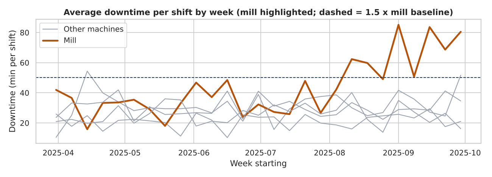
The amber line leaves its normal band and stays out. The generator planted the change on 11 August; the printed table above shows how close the rule gets, and how noisy single weeks are.
Now work in a fixed order: worst machine, when it changed, then split the after period by shift, reason and part. Whatever differs most is where to look in the workshop.
#Step 11: Mill before and after, by shift and by reason
shifts downtime_min cycle_ratio scrap_rate_pct good_per_shift
period
before 391.0 36.65 1.11 1.41 162.35
from change week 78.0 72.69 1.17 1.96 143.49
downtime_min scrap_rate_pct
shift
Morning 53.81 1.56
Afternoon 55.04 1.83
Night 109.23 2.63
downtime_min scrap_rate_pct
part
Bracket 69.97 1.90
Flange 88.60 1.90
Shaft 70.81 2.06
period before from change week change_pts
downtime_reason
Tool change 28.4 57.6 29.2
Waiting for material 14.6 12.1 -2.5
Operator absent 11.6 8.6 -3.0
Setup / changeover 24.8 15.0 -9.8
Breakdown 20.5 6.7 -13.8
Reason shares sum to 100% inside each period. The reason whose share jumped is the lead for maintenance. If the part makes little difference, the cause is not one product.
#Step 13: Integrity checks and the findings, computed from the data
checks={"raw = clean + rejected + duplicates":len(log)==len(df)+len(rejects)+n_dups,"machine names are the five allowed values":sorted(df["machine"].unique())==sorted(ORDER),"shifts are the three allowed values":sorted(df["shift"].unique())==sorted(SHIFTS),"scrap never above output":bool((df["scrap_pieces"]<=df["total_pieces"]).all()),"log_id is unique":bool(df["log_id"].is_unique),}fork_,v_inchecks.items():print("PASS"ifv_else"FAIL","-",k_)df.drop(columns=["week"]).to_csv("p19e_workshop/data/processed/clean_log.csv",index=False)rejects.to_csv("p19e_workshop/reports/rejected_rows.csv",index=False)bef,aft=summarise(mill[mill["period"]=="before"]),summarise(after)rate=lambdax:100*x["scrap_pieces"].sum()/x["total_pieces"].sum()gn,go=g[g["shift"]=="Night"],g[g["shift"]!="Night"]findings=[f"Rows: {len(df):,} clean of {len(log):,} raw ({len(rejects)} rejected, {n_dups} duplicates).",f"Plant OEE {pl['oee_pct']:.1f}% = availability {pl['availability_pct']:.1f} x performance {pl['performance_pct']:.1f} x quality {pl['quality_pct']:.1f}.",f"Lowest machine OEE: {oee['oee_pct'].idxmin()}{oee['oee_pct'].min():.1f}%; highest: {oee['oee_pct'].idxmax()}{oee['oee_pct'].max():.1f}%.",f"Top two downtime reasons: {par_tbl.index[0]} and {par_tbl.index[1]} = {par_tbl['cumulative_pct'].iloc[1]}% of lost minutes.",f"Bottleneck: {bottleneck} ({cap.loc[bottleneck,'good_per_shift']:.0f} good pieces per shift) vs next tightest {second} "f"({cap.loc[second,'good_per_shift']:.0f}).",f"Mill change week {first_bad.date()}: downtime {bef['downtime_min']:.1f} -> {aft['downtime_min']:.1f} min per shift; "f"tool-change share {share.loc['Tool change','before']}% -> {share.loc['Tool change','from change week']}%.",f"Grinder scrap, night vs other shifts: {rate(gn):.2f}% vs {rate(go):.2f}%; grinder is {q.loc['Grinder','loss_share_pct']:.0f}% of scrap value.",]print("\n".join("- "+fforfinfindings))
PASS - raw = clean + rejected + duplicates
PASS - machine names are the five allowed values
PASS - shifts are the three allowed values
PASS - scrap never above output
PASS - log_id is unique
- Rows: 2,336 clean of 2,367 raw (19 rejected, 12 duplicates).
- Plant OEE 83.3% = availability 93.3 x performance 90.5 x quality 98.6.
- Lowest machine OEE: Mill 79.7%; highest: Saw 86.2%.
- Top two downtime reasons: Setup / changeover and Tool change = 59.5% of lost minutes.
- Bottleneck: Mill (159 good pieces per shift) vs next tightest Lathe (212).
- Mill change week 2025-09-01: downtime 36.7 -> 72.7 min per shift; tool-change share 28.4% -> 57.6%.
- Grinder scrap, night vs other shifts: 5.39% vs 1.51%; grinder is 40% of scrap value.
Read carefully. These findings describe the synthetic log only. Roughly 10% slower than standard on every machine is either a plant-wide habit or standards set too tight; the owner must decide which.
Recommendation
Evidence
Inspect cutters, inserts and coolant on the mill now; compare tool-life records before and after the change week
mill change week, tool-change share
Protect the constraint: schedule setups and tool changes between batches and keep spare tooling at the mill
bottleneck
Review first-piece inspection, lighting, set-up sheets and handover on the night grinder
night scrap rate
Time a sample of cycles; retrain or update the standards
performance ratio below 100%
Alert when any machine runs above 1.5 times its own downtime baseline for three weeks
change-week rule
Use drop-downs for machine and shift; block downtime above planned minutes at entry
typing errors
Limits. Synthetic and planted; each machine-shift is an independent batch, so the log cannot follow a part through the route; no buffers or starvation are recorded; rows with unknown downtime were left out of OEE, which biases it if they were not random; performance is measured against unaudited standards; Ksh values per piece are illustrative. For Power BI, build Availability, Scrap Rate and OEE as measures from sums, not averages of row ratios (Part 17).
In this portfolio project a five-machine workshop felt output slipping and scrap rising, but the hand-typed log was inconsistent.
Task
Clean the log with a full reconciliation, measure downtime, scrap and OEE, find the bottleneck and trace the decline.
Action
I standardised names, rejected impossible rows with reasons, kept missing downtime missing, computed OEE from sums, compared machines and shifts with pivots and heatmaps, and found the change week with a rule fixed in advance.
Result
The mill is the bottleneck and its decline starts at one week, mostly tool changes at night; the grinder has a separate steady night scrap problem. The data is synthetic, so this shows method.
Practice question. Why compute a group's scrap rate from total scrap divided by total pieces instead of averaging row rates?
Show solution
Averaging row rates gives a small batch the same weight as a large one. Dividing sums weights every piece equally.
#19.10 Project 6: Digital Lending and Credit Risk with SQL (Advanced)
Data and honest scope. Data: synthetic. The lender database comes from build_fintech_db (about 1,000 customers, 20,000 transactions and a few hundred loans), generated with a fixed seed. Every number describes synthetic data, not a real lender. The loss-given-default values and the Ksh impact are illustrations of method, not forecasts.
The question. You are the credit-risk analyst for a digital lender. Which customer and loan segments drive defaults, how healthy is the open book, how much loss should be expected, and what simple rule would change results? The work is done mostly in SQL, with pandas for the final tables and charts. The machine learning version of this question is Project 7.
importsqlite3importnumpyasnp,pandasaspdimportmatplotlib.pyplotasplt,seabornassnsfromfintech_dbimportbuild_fintech_dbsns.set_theme(style="whitegrid")BLUE,GREEN,GREY,DARK,AMBER="#1F5FD6","#2BB38A","#9CA3AF","#0B2A4A","#B45309"pd.set_option("display.width",100)con=sqlite3.connect(build_fintech_db("p19f_fintech.db"))q=lambdasql:pd.read_sql(sql,con)print(q("SELECT 'customers' AS tbl, COUNT(*) AS n FROM customers UNION ALL SELECT 'loans', COUNT(*) FROM loans ""UNION ALL SELECT 'repayments', COUNT(*) FROM repayments").to_string(index=False))q("SELECT loan_id, product, principal_ksh, interest_rate_pct, term_months, disbursement_date, credit_score, status, ""days_past_due FROM loans LIMIT 3")
tbl n
customers 1000
loans 560
repayments 2867
loan_id
product
principal_ksh
interest_rate_pct
term_months
disbursement_date
credit_score
status
days_past_due
0
L0001
Digital Loan
8200.0
41.7
2
2024-06-04
582
Closed
0
1
L0002
Digital Loan
28400.0
38.5
3
2024-05-25
625
Closed
0
2
L0003
Asset Finance
348200.0
17.8
24
2025-03-29
597
Active
0
q(sql) is a one-line helper around pd.read_sql. The tables used are loans, customers and repayments.
Each check counts rows that break a rule; zero is the answer you want. A NULL paid_date is not an error here: it is how the repayments table says an instalment has not been paid. Always read what a missing value means before dropping or filling it.
#Step 2: A quality-check table and the status rule
checks=q("""SELECT 'duplicate loan_id' AS chk, COUNT(*) - COUNT(DISTINCT loan_id) AS rows_failing FROM loansUNION ALL SELECT 'principal <= 0', COUNT(*) FROM loans WHERE principal_ksh <= 0UNION ALL SELECT 'credit score outside 300-850', COUNT(*) FROM loans WHERE credit_score NOT BETWEEN 300 AND 850UNION ALL SELECT 'term_months <= 0', COUNT(*) FROM loans WHERE term_months <= 0UNION ALL SELECT 'loan with unknown customer', COUNT(*) FROM loans WHERE customer_id NOT IN (SELECT customer_id FROM customers)UNION ALL SELECT 'repayment with unknown loan', COUNT(*) FROM repayments WHERE loan_id NOT IN (SELECT loan_id FROM loans)UNION ALL SELECT 'defaulted but days_past_due <= 90', COUNT(*) FROM loans WHERE status = 'Defaulted' AND days_past_due <= 90""")print(checks.to_string(index=False))print(q("SELECT status, COUNT(*) AS loans, MIN(days_past_due) AS min_dpd, MAX(days_past_due) AS max_dpd FROM loans GROUP BY status").to_string(index=False))
chk rows_failing
duplicate loan_id 0
principal <= 0 0
credit score outside 300-850 0
term_months <= 0 0
loan with unknown customer 0
repayment with unknown loan 0
defaulted but days_past_due <= 90 0
status loans min_dpd max_dpd
Active 86 0 70
Closed 364 0 0
Defaulted 110 92 358
UNION ALL stacks checks into one table you can show a reviewer. Defaulted loans all sit above 90 days past due, the usual definition, so status is a trustworthy outcome label.
Right-censoring means we stopped watching before the outcome could happen. A loan disbursed last month cannot have reached 90 days past due, so it looks "good" only because it is young. Averaging over the whole book then makes the lender look safer than it is. The fix is a mature cohort: keep loans that have been on the books long enough for a default to be observable (seasoning).
#Step 3: Default rate by loan age, then the mature cohort
age=q("""WITH l AS (SELECT *, CAST(julianday('2025-12-31') - julianday(disbursement_date) AS INTEGER) AS age_days FROM loans)SELECT CASE WHEN age_days <= 180 THEN '1: up to 180 days' WHEN age_days <= 365 THEN '2: 181-365 days' ELSE '3: over 365 days' END AS age_band, COUNT(*) AS loans, SUM(status = 'Defaulted') AS defaults, ROUND(100.0 * SUM(status = 'Defaulted') / COUNT(*), 1) AS default_rate_pctFROM l GROUP BY age_band ORDER BY age_band""")print(age.to_string(index=False))MIN_AGE=180mature_sql=f"""SELECT l.*, c.age, c.occupation, c.county, c.monthly_income_ksh, (status = 'Defaulted') AS is_default, principal_ksh * (1 + interest_rate_pct / 100.0 * term_months / 12) / term_months / monthly_income_ksh AS inst_to_incomeFROM loans l JOIN customers c ON c.customer_id = l.customer_idWHERE julianday('2025-12-31') - julianday(disbursement_date) >= {MIN_AGE}"""mature=pd.read_sql(mature_sql,con,parse_dates=["disbursement_date"])n_all=q("SELECT COUNT(*) AS n, ROUND(100.0 * AVG(status = 'Defaulted'), 1) AS rate FROM loans").iloc[0]print(f"all loans: {int(n_all['n'])}, default rate {n_all['rate']}% | mature (>= {MIN_AGE} days): {len(mature)}, "f"{100*mature['is_default'].mean():.1f}%")
age_band loans defaults default_rate_pct
1: up to 180 days 75 12 16.0
2: 181-365 days 174 34 19.5
3: over 365 days 311 64 20.6
all loans: 560, default rate 19.6% | mature (>= 180 days): 485, 20.2%
Young loans have a low default rate only because they are young; it does not mean new lending is safer. 180 days is a judgement call: test 120 and 240 to see whether conclusions change (a sensitivity check). Joining customers also proves no loans were duplicated or dropped.
One helper builds the same table for any grouping: loans, defaults, default rate and a rough 95 percent margin of error, 1.96 x sqrt(p(1-p)/n). The margin matters because a rate on 40 loans is much less certain than one on 400. Two segments that differ by less than their margins cannot be ranked.
The instalment-to-income ratio is a debt-to-income style measure built from the loan itself: monthly instalment = principal x (1 + rate x term / 12) / term, divided by monthly income. Read the margin column before the ranking.
#Step 5: Chart: default rate by product and by instalment ratio
fig,ax=plt.subplots(1,2,figsize=(10,3.6))bp=by_product["default_rate_pct"]ax[0].bar(bp.index,bp.values,color=[AMBERifv==bp.max()elseBLUEforvinbp.values])ax[0].set_title("Default rate by product (mature cohort)");ax[0].set_xlabel("Product");ax[0].set_ylabel("Default rate (%)")ax[0].tick_params(axis="x",labelrotation=20)br=by_ratio["default_rate_pct"]ax[1].bar(br.index.astype(str),br.values,color=[AMBERifv==br.max()elseBLUEforvinbr.values])ax[1].set_title("Default rate by instalment-to-income band");ax[1].set_xlabel("Instalment as share of monthly income");ax[1].set_ylabel("Default rate (%)")plt.tight_layout();plt.savefig("p19f_segments.png",dpi=130);plt.close();print("saved p19f_segments.png")
saved p19f_segments.png
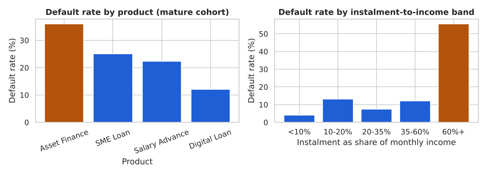
Amber marks the riskiest group in each panel. Compare the size of the gaps with the margins printed above before drawing a conclusion.
A vintage is a group of loans disbursed in the same month. Tracking default by vintage shows whether underwriting got better or worse over time. Only mature vintages are used, so the cohort limit applies here too.
#Step 6: Default rate by disbursement month (SQL window function for the running average)
vint=pd.read_sql(f"""WITH v AS ( SELECT strftime('%Y-%m', disbursement_date) AS vintage, COUNT(*) AS loans, SUM(status = 'Defaulted') AS defaults, ROUND(100.0 * SUM(status = 'Defaulted') / COUNT(*), 1) AS default_rate_pct, ROUND(AVG(credit_score)) AS avg_score FROM loans WHERE julianday('2025-12-31') - julianday(disbursement_date) >= {MIN_AGE} GROUP BY vintage)SELECT *, ROUND(AVG(default_rate_pct) OVER (ORDER BY vintage ROWS BETWEEN 2 PRECEDING AND CURRENT ROW), 1) AS rolling3_pctFROM v ORDER BY vintage""",con).set_index("vintage")print(vint.head(8).to_string())fig,ax=plt.subplots(figsize=(10,3.6))ax.plot(vint.index,vint["default_rate_pct"],marker="o",color=BLUE,label="vintage default rate")ax.plot(vint.index,vint["rolling3_pct"],color=DARK,linewidth=1.5,label="3-month rolling average")w_=vint["default_rate_pct"].idxmax()ax.scatter([w_],[vint.loc[w_,"default_rate_pct"]],color=AMBER,s=70,zorder=3,label="highest vintage")ax.set_title("Default rate by disbursement month (mature cohort)")ax.set_xlabel("Disbursement month");ax.set_ylabel("Default rate (%)");ax.tick_params(axis="x",labelrotation=60);ax.legend()plt.tight_layout();plt.savefig("p19f_vintage.png",dpi=130);plt.close();print("saved p19f_vintage.png")
AVG(...) OVER (ORDER BY ... ROWS BETWEEN 2 PRECEDING AND CURRENT ROW) is a SQL rolling average. Months with few loans are noisy, so read the rolling line, not single points.
Portfolio at risk (PAR) is the share of the outstanding book that sits in loans with an instalment overdue by more than N days. PAR30 uses 30 days, PAR90 uses 90. It weights loans by money still owed, so one large late loan matters more than one small one. We rebuild it from the schedule instead of trusting days_past_due. The data has no balance column, so outstanding principal is approximated as principal x unpaid instalments / term (a straight-line assumption).
#Step 7: PAR30 and PAR90 by product with one SQL query
par=q("""WITH sched AS ( SELECT loan_id, COUNT(*) AS n_due, SUM(paid_date IS NULL) AS n_unpaid, MAX(CASE WHEN paid_date IS NULL THEN julianday('2025-12-31') - julianday(due_date) ELSE 0 END) AS max_overdue FROM repayments GROUP BY loan_id),book AS ( SELECT l.product, l.principal_ksh * (l.term_months - (s.n_due - s.n_unpaid)) * 1.0 / l.term_months AS outstanding, s.max_overdue FROM loans l JOIN sched s USING (loan_id))SELECT product, COUNT(*) AS loans, ROUND(SUM(outstanding) / 1e6, 2) AS outstanding_m, ROUND(100.0 * SUM(CASE WHEN max_overdue > 30 THEN outstanding ELSE 0 END) / SUM(outstanding), 1) AS par30_pct, ROUND(100.0 * SUM(CASE WHEN max_overdue > 90 THEN outstanding ELSE 0 END) / SUM(outstanding), 1) AS par90_pctFROM book WHERE outstanding > 0 GROUP BY product ORDER BY par90_pct DESC""")print(par.to_string(index=False))
These PAR values look high because the book still carries defaulted loans with an unpaid balance (no write-offs are modelled), so treat the table as a demonstration of the calculation. A lender that writes off after 90 or 180 days would report a much lower PAR.
Assumption, not a finding. The database records no recoveries, so LGD cannot be estimated. The values below (60% for unsecured digital loans down to 30% for asset finance) are illustrative assumptions that show the mechanics.
LGD={"Digital Loan":0.60,"Salary Advance":0.50,"SME Loan":0.45,"Asset Finance":0.30}ead=q("""SELECT l.product, COUNT(*) AS active_loans, SUM(l.principal_ksh * (l.term_months - (s.n_due - s.n_unpaid)) * 1.0 / l.term_months) AS ead_kshFROM loans l JOIN (SELECT loan_id, COUNT(*) AS n_due, SUM(paid_date IS NULL) AS n_unpaid FROM repayments GROUP BY loan_id) s USING (loan_id)WHERE l.status = 'Active' GROUP BY l.product""").set_index("product")el=pd.DataFrame({"PD":mature.groupby("product")["is_default"].mean().round(3),"LGD_assumed":pd.Series(LGD)}).join(ead)el[["active_loans","ead_ksh"]]=el[["active_loans","ead_ksh"]].fillna(0)el["expected_loss_ksh"]=el["PD"]*el["LGD_assumed"]*el["ead_ksh"]print(el.round({"ead_ksh":0,"expected_loss_ksh":0}).to_string())print(f"Total expected loss on Active loans: Ksh {el['expected_loss_ksh'].sum():,.0f} "f"({100*el['expected_loss_ksh'].sum()/el['ead_ksh'].sum():.1f}% of EAD)")
PD LGD_assumed active_loans ead_ksh expected_loss_ksh
Asset Finance 0.360 0.30 37.0 14126972.0 1525713.0
Digital Loan 0.120 0.60 0.0 0.0 0.0
SME Loan 0.250 0.45 49.0 5876333.0 661088.0
Salary Advance 0.223 0.50 0.0 0.0 0.0
Total expected loss on Active loans: Ksh 2,186,800 (10.9% of EAD)
Products with no Active loans left show zero exposure. Lifetime PD applied to remaining balances is conservative, so read the total as an upper-side illustration.
Machine learning comes in Project 7. A risk committee often starts with a transparent rule: decline when the score is low or the instalment takes too much of income. To turn a rule into money, give each loan a value. An approved loan that repays earns its interest; an approved loan that defaults loses LGD x exposure; a declined loan earns and loses nothing. This is a deliberately crude model, so read the result as an illustration.
v=mature.copy()v["lgd"]=v["product"].map(LGD)v["interest_ksh"]=v["principal_ksh"]*v["interest_rate_pct"]/100*v["term_months"]/12v["exposure"]=v["principal_ksh"]# simple: full principal exposed at defaultv["value_ksh"]=np.where(v["is_default"]==1,-v["lgd"]*v["exposure"],v["interest_ksh"])rules={"approve everyone":pd.Series(False,index=v.index),"decline score < 550":v["credit_score"]<550,"decline instalment > 60% of income":v["inst_to_income"]>0.60,"decline either of the two":(v["credit_score"]<550)|(v["inst_to_income"]>0.60),}rows=[]forname,declineinrules.items():ok=~declinerows.append([name,round(100*ok.mean(),1),round(100*v.loc[ok,"is_default"].mean(),1),round(v.loc[ok,"value_ksh"].sum()/1e6,2)])policy=pd.DataFrame(rows,columns=["rule","approval_pct","bad_rate_approved_pct","net_value_ksh_m"])print(policy.to_string(index=False))dec=v[rules["decline either of the two"]]print("declined by the combined rule:",len(dec),"| of which defaulted:",int(dec["is_default"].sum()))
rule approval_pct bad_rate_approved_pct net_value_ksh_m
approve everyone 100.0 20.2 4.06
decline score < 550 81.6 15.4 5.74
decline instalment > 60% of income 75.9 9.0 9.58
decline either of the two 63.9 6.8 8.37
declined by the combined rule: 175 | of which defaulted: 77
Net value is interest on approved good loans minus assumed loss on approved defaulters, in Ksh million. The rules were chosen after looking at the same cohort, so the gain is optimistic: test any rule on new lending before using it.
top,low=by_product["default_rate_pct"].idxmax(),by_product["default_rate_pct"].idxmin()best=policy.loc[policy["net_value_ksh_m"].idxmax()]base=policy.loc[policy["rule"]=="approve everyone","net_value_ksh_m"].iloc[0]findings=[f"Mature-cohort default rate: {100*mature['is_default'].mean():.1f}% on {len(mature)} loans (all loans: {n_all['rate']}%).",f"Highest-risk product: {top} ({by_product.loc[top,'default_rate_pct']}%, margin +/- {by_product.loc[top,'margin_pts']}); "f"lowest: {low} ({by_product.loc[low,'default_rate_pct']}%).",f"Score band {by_score.index[0]}: {by_score['default_rate_pct'].iloc[0]}% default (n={int(by_score['loans'].iloc[0])}); "f"band {by_score.index[-1]}: {by_score['default_rate_pct'].iloc[-1]}% (n={int(by_score['loans'].iloc[-1])}).",f"Instalment ratio {by_ratio.index[0]}: {by_ratio['default_rate_pct'].iloc[0]}% default; ratio {by_ratio.index[-1]}: "f"{by_ratio['default_rate_pct'].iloc[-1]}%.",f"Highest vintage: {w_} at {vint.loc[w_,'default_rate_pct']}%; vintage range {vint['default_rate_pct'].min()}% to {vint['default_rate_pct'].max()}%.",f"Expected loss on the Active book (assumed LGD): Ksh {el['expected_loss_ksh'].sum():,.0f}.",f"Best rule: '{best['rule']}' gives Ksh {best['net_value_ksh_m']}m vs Ksh {base}m approving everyone.",]print("\n".join("- "+fforfinfindings))
- Mature-cohort default rate: 20.2% on 485 loans (all loans: 19.6%).
- Highest-risk product: Asset Finance (36.0%, margin +/- 13.3); lowest: Digital Loan (12.0%).
- Score band <550: 41.6% default (n=89); band 700+: 6.2% (n=16).
- Instalment ratio <10%: 4.1% default; ratio 60%+: 55.6%.
- Highest vintage: 2025-07 at 50.0%; vintage range 4.8% to 50.0%.
- Expected loss on the Active book (assumed LGD): Ksh 2,186,800.
- Best rule: 'decline instalment > 60% of income' gives Ksh 9.58m vs Ksh 4.06m approving everyone.
Read carefully. These findings describe the synthetic data only. The generator links default to score, affordability and product, so finding those links shows the method works, not what a real lender sees.
Recommendation
Evidence
Add a hard rule or a steep price step for the highest instalment-to-income band, where defaults jump
instalment-ratio table
Choose the approve, refer or decline rule by comparing priced options, as in the rule table; review it quarterly against real outcomes
rule pricing
Require stronger affordability evidence or collateral checks on the highest-default product
product table
Quote default rates only for seasoned cohorts and show the number of loans behind every rate
censoring table, margins
Record collections and recoveries so LGD is estimated, not assumed
expected-loss assumption
Track PAR30, PAR90, vintage default rates monthly
PAR and vintage tables
Limits. Small samples give wide margins and county or occupation rankings can change with another seed. Censoring remains: a 180-day cut-off removes the youngest loans, but real work uses survival analysis or fixed-horizon definitions such as default within 12 months. We observe only approved loans (selection bias). LGD is assumed. Using county, age or occupation in a real scorecard needs legal and ethical review; this guide does not give legal advice.
In this portfolio project a digital lender wanted to know which customers and loan types drive defaults and whether a simple rule could cut losses.
Task
Query the loan book in SQL, handle right-censoring, measure default and delinquency, estimate expected loss and price a decision rule.
Action
I joined loans, customers and repayments with SQL, built a mature cohort, reported segment rates with margins of error, rebuilt PAR from the schedule with a CTE, estimated expected loss with an assumed LGD, and priced transparent rules in Ksh.
Result
Affordability, score and product explain most of the risk, and a rule combining score and affordability improves illustrative net value. The data is synthetic, so this shows method, not a real lender's performance.
Practice question. Why is it wrong to quote one default rate for all loans disbursed in the last twelve months?
Show solution
The youngest loans have not had time to default (right-censoring), so the rate is understated. Quote rates for a seasoned cohort, or for a fixed horizon such as default within six months of disbursement.
Level and honesty. Level: Advanced. Prerequisites: Parts 6, 9, 11 and 12 (SQL, ML foundations, classification, ensembles). Every number in this project describes synthetic data from the lender database built by build_fintech_db. It is not a real lender's performance, and the Ksh figures are an illustration of method, not a forecast.
The question. A digital lender wants to decide, at the moment of application, whether to approve a loan. In this portfolio project you build a model that gives each applicant a probability of default (the chance the loan ends up 90 or more days past due), then turn that probability into an approve or decline rule using money, not just accuracy. You also check that the rule does not treat customer groups very differently.
Step
What you do
Output
1. Data
SQL feature table, one row per loan
features known at application
2. Prepare
drop leakage, handle recent loans, stratified split
train and test sets
3. Baseline
always-predict-the-average and a credit-score-only rule
importsqlite3importnumpyasnpimportpandasaspdimportmatplotlib.pyplotaspltimportseabornassnsfromfintech_dbimportbuild_fintech_dbsns.set_theme(style="whitegrid")BLUE,GREEN,GREY,DARK,AMBER="#1F5FD6","#2BB38A","#9CA3AF","#0B2A4A","#B45309"pd.set_option("display.width",100)pd.set_option("display.max_columns",20)path=build_fintech_db("p19g_fintech.db")# SYNTHETIC lender databasecon=sqlite3.connect(path)fortin["customers","loans","transactions"]:n=pd.read_sql(f"SELECT COUNT(*) AS n FROM {t}",con)["n"][0]print(f"{t:<14}{n:>8,} rows")
The database is synthetic: about 1,000 customers, 20,000 transactions and a few hundred loans. loans holds one row per loan, and status is Active, Closed or Defaulted.
A model must only use facts the lender knew on the day it approved the loan. So the features come from the loan terms, the customer profile, and the customer's wallet activity in the 90 days before disbursement. The < in the join below is what stops transactions after the loan from sneaking in.
#Step 2: One row per loan, with a 90-day behaviour window
sql='''WITH pre AS ( SELECT l.loan_id, COUNT(t.txn_id) AS txn_90d, COALESCE(AVG(t.amount_ksh), 0) AS avg_txn_ksh, COALESCE(AVG(t.status <> 'Success'), 0) AS failed_share FROM loans l LEFT JOIN transactions t ON t.customer_id = l.customer_id AND t.txn_date < l.disbursement_date AND t.txn_date >= date(l.disbursement_date, '-90 days') GROUP BY l.loan_id)SELECT l.loan_id, l.product, l.principal_ksh, l.interest_rate_pct, l.term_months, l.disbursement_date, l.credit_score, c.age, c.gender, c.occupation, c.monthly_income_ksh, c.kyc_level, c.segment, pre.txn_90d, pre.avg_txn_ksh, pre.failed_share, (l.status = 'Defaulted') AS default_flag, l.status, l.days_past_dueFROM loans l JOIN customers c ON c.customer_id = l.customer_idJOIN pre ON pre.loan_id = l.loan_id'''df=pd.read_sql(sql,con,parse_dates=["disbursement_date"])df["instalment_ratio"]=(df.principal_ksh*(1+df.interest_rate_pct/100*df.term_months/12)/df.term_months/df.monthly_income_ksh)print(df.shape,"| overall default rate:",round(df.default_flag.mean(),3))show=["product","principal_ksh","credit_score","txn_90d","instalment_ratio","default_flag"]df[show].head(4)
Leakage means a feature that carries the answer because it is recorded after the outcome. Here days_past_due and status are the outcome itself (a loan is Defaulted when it is 90 or more days past due). A model fed days_past_due would look perfect and be useless, because at application time that number does not exist. The next cell proves it.
fromsklearn.metricsimportroc_auc_scoreleaky_auc=roc_auc_score(df.default_flag,df.days_past_due)honest_auc=roc_auc_score(df.default_flag,-df.credit_score)print("AUC using days_past_due (leakage):",round(leaky_auc,3))print("AUC using credit_score alone :",round(honest_auc,3))LEAK=["days_past_due","status"]ID_AND_DATE=["loan_id","disbursement_date"]print("dropped as leakage:",LEAK,"| not used as features:",ID_AND_DATE)
AUC using days_past_due (leakage): 1.0
AUC using credit_score alone : 0.7
dropped as leakage: ['days_past_due', 'status'] | not used as features: ['loan_id', 'disbursement_date']
The leaky column scores close to a perfect AUC of 1, which is the warning sign: if a model looks too good, look for leakage first. Now the second trap. A loan disbursed last month has not had time to default, so its label 0 really means 'not yet'. This is right-censoring. The fix is to keep only loans that have been observed for long enough.
#Step 4: Right-censoring: keep loans observed for at least 270 days
AS_OF=pd.Timestamp("2025-12-31")# last date in the databasedf["days_observed"]=(AS_OF-df.disbursement_date).dt.daysdf["quarter"]=df.disbursement_date.dt.to_period("Q").astype(str)by_q=df.groupby("quarter").agg(loans=("loan_id","size"),default_rate=("default_flag","mean"),still_active=("status",lambdas:(s=="Active").mean()))print(by_q.round(3).to_string())mature=df[df.days_observed>=270].copy()print("\nall loans:",len(df),"| mature loans kept:",len(mature))print("default rate, mature:",round(mature.default_flag.mean(),3))
In real portfolios the default rate of the newest quarters is artificially low, so you drop them or model time to default. In this synthetic table the quarterly rates do not collapse in the newest quarters (compare the table above), so the rule removes only the youngest loans, but keeping it is the habit that protects you on real data. Loans that are still Active inside the kept window are counted as not defaulted, which is a limitation we return to at the end.
fromsklearn.model_selectionimporttrain_test_splitnum=["principal_ksh","interest_rate_pct","term_months","credit_score","age","monthly_income_ksh","txn_90d","avg_txn_ksh","failed_share","instalment_ratio"]cat=["product","occupation","kyc_level","segment"]# gender is NOT a model featureX,y=mature[num+cat],mature.default_flag.astype(int)X_tr,X_te,y_tr,y_te=train_test_split(X,y,test_size=0.3,stratify=y,random_state=42)meta_te=mature.loc[X_te.index,["gender","segment","principal_ksh"]]print("train:",X_tr.shape,"default rate",round(y_tr.mean(),3))print("test :",X_te.shape,"default rate",round(y_te.mean(),3))
stratify=y keeps the default rate almost identical in both sets. Without it, a small test set can end up with too few defaults to measure anything. Gender is left out of the features on purpose: we keep it aside only to audit the decisions later.
fromsklearn.dummyimportDummyClassifierfromsklearn.metricsimportaverage_precision_scoredummy=DummyClassifier(strategy="prior").fit(X_tr[num],y_tr)p_dummy=dummy.predict_proba(X_te[num])[:,1]auc_dummy=roc_auc_score(y_te,p_dummy)auc_score_only=roc_auc_score(y_te,-X_te.credit_score)print("always predict the average : AUC",round(auc_dummy,3))print("credit score only (lower=bad): AUC",round(auc_score_only,3))print("average precision of dummy :",round(average_precision_score(y_te,p_dummy),3),"(equals the test default rate)")
always predict the average : AUC 0.5
credit score only (lower=bad): AUC 0.672
average precision of dummy : 0.205 (equals the test default rate)
An AUC of 0.5 means no ranking skill at all. The credit-score-only rule is the practical baseline: if a complex model cannot beat a column the lender already has, it is not worth deploying.
Cross-validation on the training set gives a mean AUC and its spread across folds; the test AUC is the single final check. Read the spread: when two models differ by less than the fold-to-fold spread, treat them as tied and prefer the simpler, more explainable one, which is usually logistic regression in credit.
fromsklearn.metricsimportroc_curvedefks_stat(y_true,p):fpr,tpr,_=roc_curve(y_true,p)returnfloat((tpr-fpr).max())# largest gap between the two cumulative curvesfig,ax=plt.subplots(figsize=(10,3.6))forname,colourin[("logistic",BLUE),("boosting",GREEN)]:p=models[name].predict_proba(X_te)[:,1]fpr,tpr,_=roc_curve(y_te,p)ax.plot(fpr,tpr,color=colour,lw=2,label=f"{name}: AUC {roc_auc_score(y_te,p):.2f}, KS {ks_stat(y_te,p):.2f}")ax.plot([0,1],[0,1],color=GREY,ls="--",label="no skill")ax.set_xlabel("False positive rate (good loans flagged as risky)")ax.set_ylabel("True positive rate (defaults caught)")ax.set_title("Test-set ROC curves, synthetic lender data")ax.legend(loc="lower right")plt.tight_layout()plt.savefig("p19g_roc.png",dpi=130)plt.close();print("saved p19g_roc.png")
saved p19g_roc.png
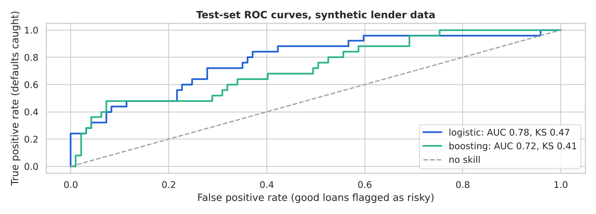
ROC curves for the two models on the held-out test loans.
The further a curve bows toward the top-left corner, the better it separates defaulters from good borrowers. KS (Kolmogorov-Smirnov) is the biggest vertical gap between the curve and the diagonal; credit teams like it because it is one number. The test set is small, so the curves are jagged: do not over-read small gaps.
Choosing a threshold with money. Accuracy is the wrong yardstick because a missed default costs far more than a declined good loan. Suppose, as an assumption, a repaid loan earns a profit of 8 percent of principal and a defaulted loan loses 60 percent of principal. We pick the cut-off using out-of-fold predictions on the training set, then apply it once to the test set.
#Step 9: Pick the approve cut-off by expected profit
fromsklearn.model_selectionimportcross_val_predictGAIN,LOSS=0.08,0.60# assumptions: share of principalfinal=models["logistic"]oof=cross_val_predict(final,X_tr,y_tr,cv=cv,method="predict_proba")[:,1]defprofit(p,y_true,principal,cut):approve=p<cut# approve when predicted risk is below the cutgain=np.where(y_true==0,GAIN,-LOSS)*principalreturnfloat(gain[approve].sum()),float(approve.mean())cuts=np.linspace(0.05,0.60,56)tr_prin=X_tr.principal_ksh.to_numpy()tab=[profit(oof,y_tr.to_numpy(),tr_prin,c)[0]forcincuts]best_cut=float(cuts[int(np.argmax(tab))])print("best cut-off on training folds:",round(best_cut,2))print("approve everyone, train: Ksh",f"{profit(oof,y_tr.to_numpy(),tr_prin,9)[0]:,.0f}")print("best cut-off, train : Ksh",f"{max(tab):,.0f}")
best cut-off on training folds: 0.13
approve everyone, train: Ksh -8,119,160
best cut-off, train : Ksh 1,509,800
fromsklearn.metricsimportprecision_score,recall_score,confusion_matrixp_te=final.predict_proba(X_te)[:,1]te_prin=X_te.principal_ksh.to_numpy()flag=(p_te>=best_cut).astype(int)# 1 = predicted risky = declinetn,fp,fn,tp=confusion_matrix(y_te,flag).ravel()print(f"declined: {flag.sum()} of {len(flag)} | caught defaults {tp}, missed {fn}, "f"good loans declined {fp}")print("precision (declined that truly default):",round(precision_score(y_te,flag),3))print("recall (defaults we caught) :",round(recall_score(y_te,flag),3))p_all,_=profit(p_te,y_te.to_numpy(),te_prin,9)p_cut,appr=profit(p_te,y_te.to_numpy(),te_prin,best_cut)print(f"test profit approve-all: Ksh {p_all:,.0f} | with cut-off: Ksh {p_cut:,.0f} "f"(approval rate {appr:.1%})")
declined: 42 of 122 | caught defaults 16, missed 9, good loans declined 26
precision (declined that truly default): 0.381
recall (defaults we caught) : 0.64
test profit approve-all: Ksh -4,270,544 | with cut-off: Ksh 93,260 (approval rate 65.6%)
Read the trade-off honestly: a stricter cut-off declines more good customers (lost business) to avoid bad loans. The gain over 'approve everyone' depends entirely on the assumed gain and loss percentages, so a real project would get those from the finance team and test a range. If the profit with the cut-off is not clearly higher on the test set, the honest finding is that this small synthetic sample cannot prove the rule helps.
#Interpret: what drives the score, and who is affected
fromsklearn.inspectionimportpermutation_importancepi=permutation_importance(final,X_te,y_te,scoring="roc_auc",n_repeats=15,random_state=42)imp=pd.Series(pi.importances_mean,index=X_te.columns).sort_values()err=pd.Series(pi.importances_std,index=X_te.columns)[imp.index]fig,ax=plt.subplots(figsize=(10,3.6))cols=[AMBERifv==imp.max()elseBLUEforvinimp]ax.barh(imp.index,imp.values,xerr=err.values,color=cols)ax.axvline(0,color=DARK,lw=1)ax.set_xlabel("Drop in test AUC when the column is shuffled")ax.set_ylabel("Feature")ax.set_title("Permutation importance of the logistic model (bars: +/- 1 std over 15 shuffles)")plt.tight_layout()plt.savefig("p19g_importance.png",dpi=130)plt.close();print("saved p19g_importance.png")print("most important feature:",imp.idxmax())
saved p19g_importance.png
most important feature: instalment_ratio
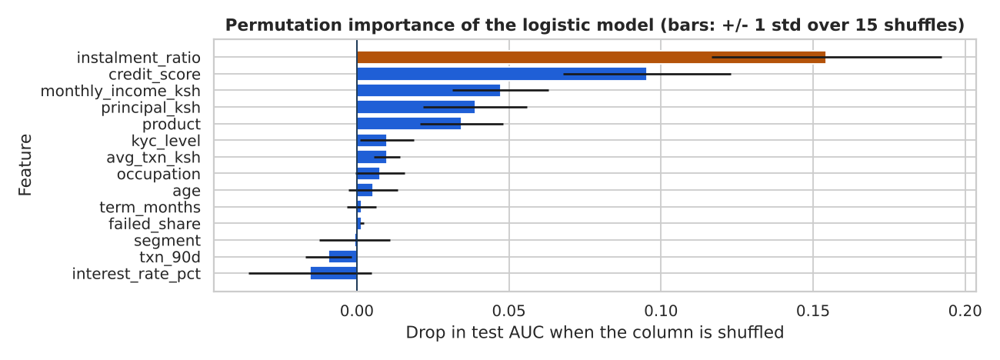
How much AUC is lost when each feature is shuffled.
Permutation importance shuffles one column at a time and measures how much the score drops: a big drop means the model leans on that column. Bars near zero, or whose error bar crosses zero, add nothing you can rely on. Importance says what the model uses, not what causes default.
A fairness check compares how the rule treats groups. Look at three things together: the group sizes, the approval rates, and the actual default rates. A rule of thumb used in audits is the 'four-fifths' ratio: the lowest approval rate should be at least 0.8 of the highest. With a test set this small, a gap can be pure chance, so a sensible report shows the counts, says the sample is too small to conclude, and recommends re-running the audit on more data. Also remember that removing gender as a feature does not remove it: other columns can act as proxies.
Use the model to rank applicants and route the riskiest band to manual review, rather than to auto-decline.
Set the cut-off from the finance team's real gain and loss figures and re-test it each quarter.
Keep logistic regression as the production candidate unless boosting wins by more than the fold spread.
Re-run the segment audit on every release and publish the counts, not only the rates.
Monitor the score distribution and the default rate by vintage; retrain when they drift.
Limits. The sample is small, so every metric has wide error bars. The data is synthetic, so no finding transfers to a real lender. Active loans were treated as not defaulted. Declined applicants are never seen, so the model learns only from people who were approved (selection bias). Features such as the credit score may themselves be built from older data. Finally, the profit numbers depend on assumed gain and loss percentages.
Using it in the real world. Data needed: application facts and 12 or more months of repayment outcomes. Validate with a time-based split (train on older vintages, test on newer ones) before trusting a random split. It fails when customer mix or the economy changes, and when staff game the inputs. Monitor the approval rate, population stability of the score, and default rate by vintage, with a Kenyan SACCO or digital lender reviewing a monthly one-page report.
#Step 13: A README outline you can save with the project
readme='''# Predicting loan default (synthetic lender data)## QuestionCan we rank loan applicants by default risk and set an approve rule from costs?## DataSynthetic lender database (build_fintech_db). One row per loan, SQL feature table.## MethodLeakage removed, recent loans dropped, stratified split, baseline, logistic vs boosting.## ResultsAUC, KS, precision and recall at a cost-based cut-off; permutation importance.## FairnessApproval rate and counts by gender and customer segment.## LimitsSmall synthetic sample, active loans treated as good, selection bias.## Run itpython project7.py (needs numpy, pandas, scikit-learn, matplotlib)'''withopen("p19g_README_project7.md","w")asf:f.write(readme)print(len(readme.splitlines()),"lines written to p19g_README_project7.md")
15 lines written to p19g_README_project7.md
3-minute STAR explanation.Situation: A lender wanted to approve loans faster without losing money. Task: build a default model and an approve rule. Action: I built the features in SQL using only pre-disbursement data, removed leaked columns and loans too recent to have defaulted, compared a baseline, logistic regression and gradient boosting, picked the cut-off on training folds using assumed gain and loss, and audited approval rates by segment. Result: I can show the lift over the baseline with honest error bars, the cut-off's expected profit, and the limits: small synthetic sample, selection bias, assumed costs. Say the limits yourself; interviewers trust that.
Level and honesty. Level: Advanced. Prerequisites: Parts 9 and 13 (ML foundations, unsupervised learning). All customers in this project are synthetic: they are generated in code with a fixed seed and describe no real SACCO, lender or person.
The question. A SACCO or digital lender has thousands of members and cannot treat each one individually. Which natural groups of customers exist, and what should we do differently for each?Clustering finds groups from behaviour without a target label, so there is no 'correct answer' to score against. That is why this project spends as much time on checking that the groups are stable and useful as on fitting them.
rng=np.random.default_rng(7)# four hidden behaviour types (we know them only because the data is synthetic)# txns/mo, avg txn, balance, loans, tenure, agent share, app loginstypes={"saver":(6,3500,90000,0.3,40,0.20,12),"power":(45,2500,25000,1.2,30,0.10,40),"agent":(12,1800,6000,0.5,28,0.85,2),"light":(4,900,3000,0.2,8,0.40,4)}sizes={"saver":150,"power":170,"agent":150,"light":180}rows,truth=[],[]forname,(t,a,b,l,ten,ag,lg)intypes.items():n=sizes[name]rows.append(pd.DataFrame({"txns_per_month":rng.poisson(t,n)+1,"avg_txn_ksh":a*rng.lognormal(0,0.35,n),"avg_balance_ksh":b*rng.lognormal(0,0.45,n),"loan_count":rng.poisson(l,n),"tenure_months":np.clip(rng.normal(ten,8,n),1,120).round(),"agent_share":np.clip(rng.normal(ag,0.1,n),0,1),"app_logins":rng.poisson(lg,n)}))truth+=[name]*ncust=pd.concat(rows,ignore_index=True)true_type=np.array(truth)perm=rng.permutation(len(cust))# shuffle so order carries no hintcust,true_type=cust.iloc[perm].reset_index(drop=True),true_type[perm]print(cust.shape)
Money columns (balance, transaction size) are right-skewed: a few customers hold a lot. K-means uses straight-line distance, so a column measured in tens of thousands of shillings would swamp a share between 0 and 1. Two fixes are needed: a log transform for the skewed columns, then scaling so every column has mean 0 and standard deviation 1.
fromsklearn.preprocessingimportStandardScalerskewed=["txns_per_month","avg_txn_ksh","avg_balance_ksh","app_logins","loan_count"]feat=cust.copy()feat[skewed]=np.log1p(feat[skewed])scaler=StandardScaler()Z=scaler.fit_transform(feat)print("skew before:",cust[skewed].skew().round(2).to_dict())print("skew after :",feat[skewed].skew().round(2).to_dict())print("scaled means ~0:",Z.mean(axis=0).round(2).tolist())print("scaled stds =1:",Z.std(axis=0).round(2).tolist())
The silhouette score measures, for each customer, how much closer they are to their own group than to the nearest other group. It runs from -1 to 1; above about 0.5 is clear structure, 0.25 to 0.5 is weak but usable, and near 0 means the groups overlap. The baseline is a clustering of random labels: it shows what 'no structure' scores.
fromsklearn.clusterimportKMeansfromsklearn.metricsimportsilhouette_scorerand_labels=np.random.default_rng(0).integers(0,4,len(Z))print("baseline, random 4 labels, silhouette:",round(silhouette_score(Z,rand_labels),3))ks=list(range(2,9))inertia,sil=[],[]forkinks:km=KMeans(n_clusters=k,n_init=10,random_state=42).fit(Z)inertia.append(km.inertia_);sil.append(silhouette_score(Z,km.labels_))res=pd.DataFrame({"k":ks,"inertia":np.round(inertia,0),"silhouette":np.round(sil,3)})print(res.to_string(index=False))fig,ax=plt.subplots(1,2,figsize=(10,3.6))ax[0].plot(ks,inertia,marker="o",color=BLUE)ax[0].set_xlabel("Number of clusters k");ax[0].set_ylabel("Inertia (within-cluster spread)")ax[0].set_title("Elbow plot")ax[1].plot(ks,sil,marker="o",color=GREEN)ax[1].set_xlabel("Number of clusters k");ax[1].set_ylabel("Mean silhouette score")ax[1].set_title("Silhouette by k")plt.tight_layout()plt.savefig("p19g_kselect.png",dpi=130)plt.close();print("saved p19g_kselect.png")
Left: inertia always falls as k grows. Right: silhouette peaks at the best-separated k.
Inertia always falls when you add groups, so look for the bend (the 'elbow'), not the minimum. The silhouette plot gives a second opinion. When the two agree, you can be more confident. When they disagree, pick the k that a manager can act on, within a sensible range such as 3 to 6 groups.
fromsklearn.metricsimportadjusted_rand_scorek_best=ks[int(np.argmax(sil))]K=k_bestif3<=k_best<=6else4print("k with the highest silhouette:",k_best,"| k used:",K)km=KMeans(n_clusters=K,n_init=10,random_state=42).fit(Z)cust["segment_id"]=km.labels_print("segment sizes:",cust.segment_id.value_counts().sort_index().to_dict())# stability: refit with other seeds and on bootstrap samples; ARI=1 means identical groupingaris=[adjusted_rand_score(km.labels_,KMeans(K,n_init=10,random_state=s).fit(Z).labels_)forsinrange(1,6)]print("ARI vs other seeds, min:",round(min(aris),3))idx=np.random.default_rng(1).choice(len(Z),len(Z))km_b=KMeans(K,n_init=10,random_state=42).fit(Z[idx])ari_b=adjusted_rand_score(km.labels_,km_b.predict(Z))print("ARI, bootstrap model on all customers:",round(ari_b,3))ari_t=adjusted_rand_score(true_type,km.labels_)print("ARI vs the hidden synthetic types :",round(ari_t,3))
k with the highest silhouette: 4 | k used: 4
segment sizes: {0: 150, 1: 171, 2: 180, 3: 149}
ARI vs other seeds, min: 1.0
ARI, bootstrap model on all customers: 1.0
ARI vs the hidden synthetic types : 0.996
An adjusted Rand index (ARI) of 1 means two groupings are the same and 0 means no better than chance. High values across seeds and bootstrap samples mean the segments are a stable feature of the data, not an accident of the starting point. The last line works only because this data is synthetic and we kept the hidden types; with real customers you never have that check, so the stability tests above are all you have.
fromsklearn.decompositionimportPCApca=PCA(n_components=2,random_state=42).fit(Z)P2=pca.transform(Z)ev=pca.explained_variance_ratio_print("variance explained by PC1, PC2:",ev.round(3).tolist(),"| total",round(ev.sum(),3))palette=[BLUE,GREEN,AMBER,DARK,GREY,"#7C3AED"]fig,ax=plt.subplots(figsize=(10,3.6))forsinrange(K):m=cust.segment_id.to_numpy()==sax.scatter(P2[m,0],P2[m,1],s=12,color=palette[s],alpha=0.7,label=f"segment {s}")ax.set_xlabel(f"PC1 ({ev[0]:.0%} of variance)");ax.set_ylabel(f"PC2 ({ev[1]:.0%} of variance)")ax.set_title("Customers projected to two dimensions, coloured by k-means segment (synthetic)")ax.legend(loc="best",ncol=K)plt.tight_layout()plt.savefig("p19g_pca.png",dpi=130)plt.close();print("saved p19g_pca.png")
variance explained by PC1, PC2: [0.5, 0.187] | total 0.687
saved p19g_pca.png
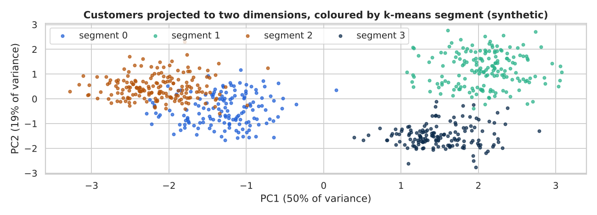
Principal-component view of the segments.
PCA squeezes seven columns into two axes that keep as much spread as possible, so you can draw the groups. The picture is a summary: two components never keep everything, so groups that overlap here may still be separate in the full seven dimensions. Use the picture to check the clustering looks sensible, not to prove it.
prof=cust.groupby("segment_id").agg(customers=("txns_per_month","size"),txns=("txns_per_month","median"),avg_txn=("avg_txn_ksh","median"),balance=("avg_balance_ksh","median"),loans=("loan_count","mean"),tenure=("tenure_months","median"),agent=("agent_share","mean"),logins=("app_logins","median"))prof["share_pct"]=(100*prof.customers/prof.customers.sum()).round(1)# name each segment by its most distinctive trait (rule-based, so names follow the data)rules=[("Savers","balance"),("Power users","txns"),("Agent-reliant","agent")]names,left={},set(prof.index)forlabel,colinrules:pick=prof.loc[list(left),col].idxmax();names[pick]=label;left.discard(pick)fori,sinenumerate(sorted(left)):names[s]="Light users"ifi==0elsef"Other {i}"prof["name"]=prof.index.map(names)cust["segment"]=cust.segment_id.map(names)prof.set_index("name").round(1)[["customers","share_pct","txns","balance","loans","tenure","agent","logins"]]
customers
share_pct
txns
balance
loans
tenure
agent
logins
name
Agent-reliant
150
23.1
12.0
5847.1
0.6
28.0
0.9
2.0
Power users
171
26.3
46.0
23498.1
1.2
30.0
0.1
39.0
Light users
180
27.7
5.0
2883.7
0.2
7.0
0.4
4.0
Savers
149
22.9
7.0
88698.3
0.3
40.0
0.2
12.0
Read each row as a person: how often they transact, how much they keep, how new they are, and whether they use agents or the app. The names above are produced by a simple rule (the segment with the highest balance is 'Savers', and so on), so check that they make sense against the numbers before you show a manager. Naming is interpretation, not a finding.
actions={"Savers":("Offer fixed-deposit or goal-savings products; consider a loan against savings.","balance and savings uptake"),"Power users":("Protect with fast support and fee tiers; cross-sell merchant accounts.","transactions per month, churn"),"Agent-reliant":("Run agent-assisted onboarding to the app; keep agent float healthy.","app logins, agent share"),"Light users":("Light nudges: first-loan offer or airtime bonus for a second transaction.","30-day reactivation rate"),}default=("Review manually.","n/a")recs=[(n,int((cust.segment==n).sum()),*actions.get(n,default))forninprof.name]plan=pd.DataFrame(recs,columns=["segment","customers","action","metric to track"])print(plan.to_string(index=False,max_colwidth=58))
segment customers action metric to track
Agent-reliant 150 Run agent-assisted onboarding to the app; keep agent fl... app logins, agent share
Power users 171 Protect with fast support and fee tiers; cross-sell mer... transactions per month, churn
Light users 180 Light nudges: first-loan offer or airtime bonus for a s... 30-day reactivation rate
Savers 149 Offer fixed-deposit or goal-savings products; consider ... balance and savings uptake
Treat segments as a starting hypothesis for marketing tests, not as fixed labels on people.
Run an A/B test per action (see Part 8) before rolling out to everyone.
Refit quarterly and compare with the old segments; customers move between groups.
Never use segments to deny service; if you use them for credit, run the fairness checks from Project 7.
Limits. K-means assumes round, similar-sized groups and is sensitive to scaling and outliers. The number of segments is partly a judgement call. The data here is synthetic, so the clean separation is unrealistically good: real customers form a blurry continuum, and silhouette scores are usually lower. Different features (for example adding county or income) would give different groups.
Using it in the real world. Data needed: 6 to 12 months of behaviour per customer, one row per customer, built with SQL as in Project 7. Validate with stability tests and by asking whether staff recognise the groups. It fails when features are dominated by one column, when the data is seasonal (compare the same months), or when new products change behaviour. Monitor segment sizes and profiles each quarter; a SACCO could review one slide per segment with the product team.
readme='''# Segmenting customers (synthetic SACCO/lender data)## QuestionWhich natural behaviour groups exist, and what action fits each?## DataSynthetic table, one row per customer: transactions, ticket size, balance, loans, tenure, channel.## Methodlog1p on skewed columns, StandardScaler, k-means for k=2..8, silhouette, stability (ARI), PCA.## ResultsSegment profile table, names, sizes, and one action and metric per segment.## LimitsSynthetic data is cleaner than real data; k is a judgement; segments change over time.## Run itpython project8.py (needs numpy, pandas, scikit-learn, matplotlib)'''withopen("p19g_README_project8.md","w")asf:f.write(readme)print(len(readme.splitlines()),"lines written to p19g_README_project8.md")
13 lines written to p19g_README_project8.md
3-minute STAR explanation.Situation: A member-based lender wanted to stop sending the same message to everyone. Task: find customer groups that a product manager could act on. Action: I built behaviour features, log-transformed and scaled them, compared k-means for several k with silhouette scores against a random-label baseline, tested stability with other seeds and a bootstrap, checked a PCA picture, and wrote a profile table with one action and metric per segment. Result: a small set of named segments with a test plan. I state clearly that clusters are a hypothesis, the data was synthetic, and real data is messier.
#Project 9: Forecasting with Public Data (Regression)
Level and data. Level: Advanced. Prerequisites: Parts 5, 10 and 12 (visualisation, regression, ensembles). The data is real, public Kenya data. Source: Our World in Data CO2 dataset (CC BY 4.0, Global Carbon Project) and World Bank consumer inflation (FP.CPI.TOTL.ZG, ODC-PDDL). We only filtered to Kenya and reshaped it. The results are a lesson in method, not an official forecast.
The question.Can we predict next year's CO2 emissions per person in Kenya better than simply repeating this year's value? Forecasting is regression with one new rule: you may only train on the past and test on the future. A random split would leak future information into training and give flattering, false scores.
importosfrompathlibimportPathimportnumpyasnpimportpandasaspdimportmatplotlib.pyplotaspltimportseabornassnssns.set_theme(style="whitegrid")BLUE,GREEN,GREY,DARK,AMBER="#1F5FD6","#2BB38A","#9CA3AF","#0B2A4A","#B45309"PUB=Path(os.environ["GUIDE_ROOT"])/"datasets"/"public"defload_public(name,url=None):p=PUB/namereturnpd.read_csv(pifp.exists()elseurl)co2=load_public("owid_co2_countries_1960_on.csv")k=co2[co2.country=="Kenya"][["year","co2_per_capita"]].dropna()ken=k.set_index("year")["co2_per_capita"]print("years:",ken.index.min(),"to",ken.index.max(),"| n =",len(ken))print("min / max tonnes per person:",ken.min(),"/",ken.max())print(ken.tail(5).to_string())
years: 1960 to 2024 | n = 65
min / max tonnes per person: 0.195 / 0.392
year
2020 0.383
2021 0.387
2022 0.379
2023 0.383
2024 0.376
Each value is tonnes of CO2 per person in one year. The series is short (a few dozen points), which limits how complex a model can be before it memorises noise.
defmake_frame(s,nlags=3):d=pd.DataFrame({"y":s})forkinrange(1,nlags+1):d[f"lag{k}"]=s.shift(k)d["year"]=s.indexreturnd.dropna()frame=make_frame(ken)SPLIT=2009# train: up to 2009, test: 2010 onwardtrain,test=frame[frame.index<=SPLIT],frame[frame.index>SPLIT]feats=["lag1","lag2","lag3","year"]print("train years:",train.index.min(),"-",train.index.max(),f"({len(train)} rows)")print("test years :",test.index.min(),"-",test.index.max(),f"({len(test)} rows)")print(frame.head(3).round(3).to_string())
train years: 1963 - 2009 (47 rows)
test years : 2010 - 2024 (15 rows)
y lag1 lag2 lag3 year
year
1963 0.331 0.316 0.300 0.315 1963
1964 0.315 0.331 0.316 0.300 1964
1965 0.264 0.315 0.331 0.316 1965
A lag is the value from earlier years: lag1 is last year, lag2 the year before. The model learns 'what does next year look like given the last three years?'. Because we split by year, no test year can influence training. Each prediction below is a one-year-ahead forecast that uses the actual lags from the real past.
fromsklearn.metricsimportmean_absolute_error,mean_squared_errordefscores(y_true,y_pred):return{"MAE":mean_absolute_error(y_true,y_pred),"RMSE":mean_squared_error(y_true,y_pred)**0.5}results={}results["naive: last year"]=scores(test.y,test.lag1)results["naive: train mean"]=scores(test.y,np.full(len(test),train.y.mean()))drift=(train.y.iloc[-1]-train.y.iloc[0])/(len(train)-1)# average yearly changeresults["naive: drift"]=scores(test.y,test.lag1+drift)print(pd.DataFrame(results).T.round(4).to_string())
MAE RMSE
naive: last year 0.0144 0.0174
naive: train mean 0.0532 0.0648
naive: drift 0.0146 0.0176
'Same as last year' is hard to beat for slowly moving series like this one. The train mean shows what ignoring the trend costs. The drift baseline adds the average yearly change seen in training. Any model must beat these to justify its complexity.
fromsklearn.linear_modelimportLinearRegressionfromsklearn.ensembleimportGradientBoostingRegressordeffit_predict(kind,tr,te):ifkind=="linear":m=LinearRegression().fit(tr[feats],tr.y)returnm.predict(te[feats])ifkind=="boost (level)":m=GradientBoostingRegressor(n_estimators=150,max_depth=2,learning_rate=0.05,random_state=42).fit(tr[feats],tr.y)returnm.predict(te[feats])# boost (change): predict the CHANGE from last year, then add it backm=GradientBoostingRegressor(n_estimators=150,max_depth=2,learning_rate=0.05,random_state=42).fit(tr[feats],tr.y-tr.lag1)returnte.lag1.to_numpy()+m.predict(te[feats])preds={k:fit_predict(k,train,test)forkin["linear","boost (level)","boost (change)"]}fork,pinpreds.items():results[k]=scores(test.y,p)tab=pd.DataFrame(results).Ttab["MAE vs naive"]=tab.MAE/tab.loc["naive: last year","MAE"]print(tab.round(4).to_string())
MAE RMSE MAE vs naive
naive: last year 0.0144 0.0174 1.0000
naive: train mean 0.0532 0.0648 3.6950
naive: drift 0.0146 0.0176 1.0146
linear 0.0278 0.0306 1.9318
boost (level) 0.0350 0.0414 2.4283
boost (change) 0.0266 0.0309 1.8460
The last column divides each model's MAE by the 'last year' MAE: below 1 means better than the naive forecast, above 1 means worse. Trees cannot predict values outside the range they saw in training, so a tree trained on levels tends to flatten when the series keeps rising. Predicting the change instead of the level is the usual cure. Read the column rather than trusting the model names.
fig,ax=plt.subplots(figsize=(10,3.6))ax.plot(ken.index,ken.values,color=DARK,lw=1.5,label="actual")ax.axvline(SPLIT+0.5,color=GREY,ls="--")ax.text(SPLIT+1,ken.min(),"test period",color=GREY)ax.plot(test.index,test.lag1,color=GREY,lw=1.5,label="naive: last year")ax.plot(test.index,preds["linear"],color=BLUE,lw=2,label="linear")ax.plot(test.index,preds["boost (change)"],color=GREEN,lw=2,label="boost (change)")ax.plot(test.index,preds["boost (level)"],color=AMBER,lw=2,ls=":",label="boost (level)")ax.set_xlabel("Year");ax.set_ylabel("CO2 per person (tonnes)")ax.set_title("Kenya CO2 per person: one-year-ahead forecasts on the held-out years")ax.legend(ncol=5,loc="upper left",fontsize=8)plt.tight_layout()plt.savefig("p19g_forecast.png",dpi=130)plt.close();print("saved p19g_forecast.png")
saved p19g_forecast.png
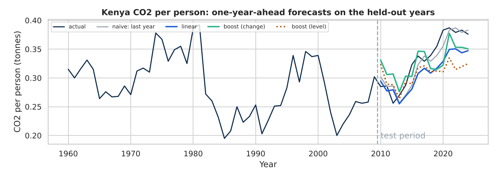
Actual values and one-year-ahead forecasts on the test years.
The forecast lines hug the actual line because they are given last year's value. That is why one-step forecasts look good even for weak models; it says little about forecasting several years ahead.
defbacktest(s,first_origin,kinds=("linear","boost (change)")):fr=make_frame(s)out={"naive":[],**{k:[]forkinkinds}}foryrin[yforyinfr.indexify>=first_origin]:tr,te=fr[fr.index<yr],fr[fr.index==yr]# train on the past onlyout["naive"].append(abs(te.y.iloc[0]-te.lag1.iloc[0]))forkinkinds:out[k].append(abs(te.y.iloc[0]-fit_predict(k,tr,te)[0]))returnpd.DataFrame(out)bt=backtest(ken,2000)print("one-step forecasts made:",len(bt),"| expanding window, first test year 2000")mae=bt.mean();print(mae.round(4).to_string())print("share of years each model beat the naive forecast:")print({k:round(float((bt[k]<bt["naive"]).mean()),2)forkinbt.columns[1:]})
one-step forecasts made: 25 | expanding window, first test year 2000
naive 0.0186
linear 0.0211
boost (change) 0.0256
share of years each model beat the naive forecast:
{'linear': 0.4, 'boost (change)': 0.28}
A single train/test split gives one number that depends on where you cut. A rolling-origin backtest refits the model many times, each time predicting the next unseen year, and averages the errors. The 'share of years' line shows consistency: a model that wins on average but only in a few years is fragile.
#Step 7: How error grows with the forecast horizon
h_rows=[]forhinrange(1,6):err=(ken.shift(-h)-ken).loc[SPLIT+1:].dropna().abs()# naive h-year-ahead errorh_rows.append([h,len(err),err.mean(),err.mean()/ken.loc[SPLIT+1:].mean()*100])hz=pd.DataFrame(h_rows,columns=["years ahead","n","naive MAE","MAE as % of mean level"])print(hz.round(3).to_string(index=False))
years ahead n naive MAE MAE as % of mean level
1 14 0.014 4.285
2 13 0.023 6.956
3 12 0.030 9.119
4 11 0.040 12.113
5 10 0.052 15.796
Forecast error grows with the horizon, even for the naive method, because more can change. Quote the horizon with every error figure: 'MAE for next-year forecasts' is a very different claim from 'MAE five years out'. Multi-year model forecasts would need to be built recursively, feeding predictions back in as lags, and their errors compound.
#Step 8: Does the method work on a harder series? Kenya inflation
inf=load_public("inflation_consumer.csv")kinf=inf[inf.Country=="Kenya"].set_index("Year")["Inflation"].dropna()bti=backtest(kinf,2000)rel=(bti.mean()/bti["naive"].mean()).round(2)print("inflation, years:",kinf.index.min(),"-",kinf.index.max(),"| forecasts:",len(bti))print("MAE as a ratio of the naive MAE (1.0 = same as naive):")print(rel.to_string())print("naive MAE, percentage points of inflation:",round(bti["naive"].mean(),2))
inflation, years: 1961 - 2023 | forecasts: 24
MAE as a ratio of the naive MAE (1.0 = same as naive):
naive 1.00
linear 1.06
boost (change) 1.16
naive MAE, percentage points of inflation: 5.06
Inflation jumps with shocks such as droughts, exchange-rate moves and fuel prices, none of which are in the lagged values. In the CO2 backtest the models did not beat the naive forecast either, and here they gain little or nothing over the naive forecast when the series is driven by outside events, and the naive error itself is large (see the last line). That is the honest result, and a good reason to treat any forecast built only from a series' own history with caution.
For slowly trending series, start with the naive and drift baselines and keep them in every report.
Only keep a model if it beats the naive forecast consistently in a backtest, not just on one split.
Quote errors with the horizon and units (tonnes per person, percentage points).
Add external drivers (income, energy use, fuel price) before expecting to beat naive on shock-driven series.
Limits. About six decades of annual data is very little for machine learning. Structural breaks (policy changes, new power plants, a pandemic year) are not predictable from lags. Lag features assume the recent past is available when you forecast. Annual averages hide seasonality. CO2 per person is an estimate from a global dataset, and revisions change past values. The conclusion applies to this series and horizon only.
Using it in the real world. Data needed: a long, consistent series and the date each value became available. Validate with a rolling backtest that mimics how you will really use the forecast. It fails at turning points and after shocks. Monitor forecast error each period against the naive benchmark and retrain on a schedule; a county planning office could use a simple, explainable forecast like this for budgets, with a clear range around it.
readme='''# Forecasting Kenya CO2 per person with public data## QuestionCan a model beat "same as last year" for one-year-ahead forecasts?## DataOur World in Data CO2 dataset (CC BY 4.0) and World Bank inflation; Kenya only.## MethodLag features, time-based split, naive/drift baselines, linear and gradient boosting,rolling-origin backtest, horizon analysis.## ResultsMAE and RMSE by model, share of years beating naive, inflation comparison.## LimitsShort series, structural breaks, one-step bias, data revisions.## Run itpython project9.py (datasets/public beside the script)'''withopen("p19g_README_project9.md","w")asf:f.write(readme)print(len(readme.splitlines()),"lines written to p19g_README_project9.md")
14 lines written to p19g_README_project9.md
3-minute STAR explanation.Situation: Someone asked whether a model could forecast a national indicator. Task: test that claim fairly using public data. Action: I split by time, built naive and drift baselines first, compared linear regression and gradient boosting (on level and on change), used a rolling-origin backtest, checked how error grows with the horizon, and repeated the method on a harder series, inflation. Result: a cautious answer: in my tests neither model beat the naive forecast consistently, so the naive forecast stays the benchmark. I report error with units and horizon, and I name the limits.
Pick one project from your target level, rebuild it with your own data or a public dataset, and publish it with a README. A finished, well explained project is worth more than five half-finished ones.
Key takeaways
Every project follows the same loop: question, data, prepare, analyse or model, judge, recommend.
Start with the beginner projects, then climb.
End each project with a recommendation and its limits.
Publish your work with a README so others can reproduce it.